About this manual
This project complements the API documentation of the Qwt library and provides something like a programmer’s manual with lots of detail about the library’s internals. The focus, however, is clearly on the QwtPlot diagram component.
By the way, this is already the 2nd edition (completely reworked), because at the time of the first edition there was no nice AsciiDoc yet and I somehow got stuck while writing the text.
The German version and the PDF variant are available here: https://ghorwin.github.io/qwtbook.
The text and images are licensed under the Creative Commons BY-NC license (see the license text in the Qwt manual repository https://github.com/ghorwin/QwtBook), so they may be used, modified and adapted freely, but please do not republish them or use them to train commercial AI systems. All source code examples, both in the text and in the downloadable tutorial/example source code archives, are licensed under the MIT license and may therefore be used in open-source as well as commercial projects.
|
|
Enjoy the read - and if some content is still missing, just be patient and come back later (or open an issue in the GitHub repo). And maybe also take a look at my other tutorials at https://schneggenport.de!
— Andreas Nicolai
1. Overview of the Qwt Library
Qwt - Qt Widgets for Technical Applications is an open-source library for technical applications and provides
certain widgets for displays and control components. Probably the most important component of the Qwt library is QwtPlot,
a very flexible and powerful diagram component.
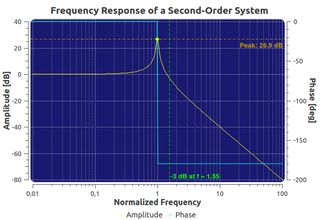
The Qwt library is released under an open-source license, has been and continues to be actively maintained by its developer Uwe Rathmann, and is hosted on SourceForge.net:
1.1. Development history
-
the first version of the Qwt library dates back to 1997 and was written by Josef Wilgen
-
since 2002 the library has been developed and maintained by Uwe Rathmann
-
version 5 is probably the most widely used (first release on 2007-02-26)
-
version 6 (first release on 2011-04-15, no more Qt3 support) contains significant API changes
-
current stable version 6.3.0 (as of May 2025)
-
the trunk already contains, in part, considerably more and more advanced functionality
1.1.1. Downloading the library
The Qwt library can be downloaded as a source code archive from the Qwt SourceForge project page. On Linux, Qwt is packaged by many distributions. Strictly speaking, there are several packages for the different Qwt library versions or Qt versions. Details about installing and using the library can be found in Chapter 17.
1.2. Widget concept and appearance
The Qwt library provides components that can be used in desktop applications just like the regular Qt widgets. The components use the Qt palette, so that the Qwt widgets fit into the respective user interface. As a result, the widgets integrate seamlessly into application interfaces. Individual components of QwtPlot also support styles. For example, rounding effects on the plot widget make it possible to imitate classic instrument displays.
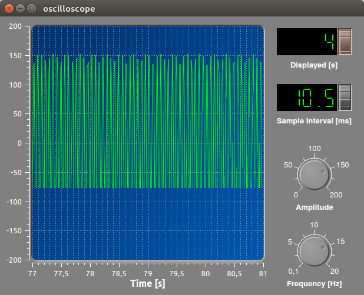
Details about styling and customizing the appearance can be found in Chapter 14.
1.3. Ownership concept of the QwtPlot widget
A fundamental property of the QwtPlot class is that it takes ownership of the elements added to it. This applies generally to all elements of the plot (lines, markers, legend, …). That is, once ownership has been transferred, QwtPlot takes care of freeing the memory.
Elements that have been added are not detached again (or only via a trick, as described in Chapter 16.1). It therefore makes sense, for plot elements that change, to provide a mechanism for recreating a drawing object as needed (factory concept).
1.4. Drawing objects and their axis dependency
An essential design feature of QwtPlot is the ability to hand arbitrary drawing objects (curves, markers, legend, …) to the plot. So that these drawing objects (plot items) can align themselves with the coordinate grid, they are given an axis dependency. As a result, these drawing objects receive a notification whenever the axis scaling changes (by zooming, or by changing the value ranges, etc.).
This functionality defines the central importance of the (up to) 4 axes in the diagram. That is also why they are firmly anchored in QwtPlot and are not added arbitrarily like other drawing objects.
1.5. Inheritance concept
Fundamentally, QwtPlot and the classes involved are designed for maximum adaptability, i.e. polymorphism is supported (almost) everywhere. If the built-in functionality is not sufficient, you can always simply derive the corresponding class and re-implement and modify the particular function to be adapted. This is described with examples in the individual chapters of the manual.
1.6. Qwt Designer plugins
The Qwt library ships plugins for Qt Designer and Qt Creator that make it easier to insert Qwt components into ui files. However, no QwtPlot properties can be set and no curves can be added. The actual customization and configuration of the plot is done in the source code.
|
The API of the Qt Designer plugins has changed in more recent Qt Creator versions, which is why the Qwt Designer plugins no longer work with current Qt and Qt Creator versions, even if you compile them against the matching library versions. |
This is another reason why the configuration and customization of QwtPlot in this manual is demonstrated exclusively through normal API calls.
|
If |
2. First Steps and an Interactive Diagram
To get comfortable with the Qwt library, in a simple example we will create an interactive diagram using the QwtPlot component.
The complete example source code can be downloaded as a 7z archive: tutorial1.7z
2.1. Program skeleton
2.1.1. QMake project file
We start with the qmake project file, in which we set the path for the library’s header files and the library to link against. Here I assume that Qwt was built from the 6.3.0 source archive and installed locally into the default directories (C:\qwt-6.3.0 on Windows and /usr/local/qwt-6.3.0 on Linux/Mac). Information about compiling the library from source and installing it can be found in Chapter 17.
TARGET = Tutorial1
QT += core gui widgets
CONFIG += c++11
win32 {
# add path to the Qwt header files
INCLUDEPATH += C:/qwt-6.3.0/include
CONFIG(debug, debug|release) {
QWTLIB = qwtd
}
else {
QWTLIB = qwt
}
# linker path
LIBS += -LC://qwt-6.3.0/lib -l$$QWTLIB
}
else {
# add path to the Qwt header files
INCLUDEPATH += /usr/local/qwt-6.3.0/include/
# linker path; on Linux, by default only the release version of the lib is built and installed
LIBS += -L/usr/local/qwt-6.3.0/lib -lqwt
}
SOURCES += main.cppThis is a .pro file for a Qwt 6.3.0 installation from source with default settings (see Chapter 17.2).
|
Note that the Qwt library compiled in debug mode has an appended d. On Linux, by default only the release version is built and installed, so the case distinction is not needed here. |
2.1.2. Minimalistic main program
To use QwtPlot you only need a very minimalistic main.cpp.
#include <QApplication>
#include <QwtPlot>
int main(int argc, char *argv[]) {
QApplication a(argc, argv);
QwtPlot plot;
plot.resize(800,500);
plot.show();
return a.exec();
}|
Once you have compiled the program and want to run it, Windows complains about a missing DLL.
For this, in the project settings, under "Run", in the "Environment" section, edit the PATH variable and add the path |
The program shows a rather boring (and ugly) diagram window (it will be made more attractive later).

|
A note about the header files of the Qwt library. Analogously to Qt classes, the Qwt classes are included via the header of the same name, i.e.: These header files are, however, only wrappers around the actual include files, with the naming scheme: In earlier versions of the Qwt lib (including the Debian package version |
2.2. Adding diagram elements
2.2.1. Adding a line
First we add a line, i.e. a diagram curve (header QwtPlotCurve or qwt_plot_curve.h):
#include <QApplication>
#include <QwtPlot>
#include <QwtPlotCurve>
int main(int argc, char *argv[]) {
QApplication a(argc, argv);
QwtPlot plot;
plot.resize(500,300);
// a bit of spacing between border and axis titles
plot.setContentsMargins(8,8,8,8);
// background of the drawing canvas should be white
plot.setCanvasBackground( Qt::white );
// read in the data to be displayed
QVector<double> x, y;
QFile f("spektrum.tsv"); // file contains 2 columns
f.open(QFile::ReadOnly);
QTextStream strm(&f);
strm.readLine(); // skip header line
while (!strm.atEnd()) {
double xval, yval;
strm >> xval >> yval;
x.append(xval);
y.append(yval);
}
QwtPlotCurve *curve = new QwtPlotCurve();
curve->setPen(QColor(180,40,20), 0);
curve->setTitle("Gamma spectrum");
curve->setRenderHint( QwtPlotItem::RenderAntialiased, true ); // use antialiasing
curve->setSamples(x, y);
curve->attach(&plot); // Plot takes ownership
plot.show();
return a.exec();
}In the extended main program, the header for QwtPlotCurve is included first. The curve object itself is created with new on the heap. We read the curve’s data from a text file (2 columns, with a header line). The file spektrum.tsv is included in the archive of the tutorial source code.
|
The following rule always applies with |
Attributes such as line color, title (shown in the legend later), and antialiasing are set (in Chapter 5 all properties of lines are explained in detail).
The function setSamples() sets the line’s data. It is important here that the passed vectors have the same length. This is a parametric curve, i.e. neither the x nor the y values have to be monotonic or follow any other rules. Each x,y value pair defines a point and these points are connected by the line.
The function attach() adds the QwtPlotCurve object to the diagram.
|
When adding the line to the diagram via |
In addition to the code that adds the line, 2 small adjustments were made to the appearance:
-
margins were added via
setContentsMargins()(see alsoQWidget::setContentsMargins()) -
the background of the drawing canvas (canvas) was colored white.
The result already looks more like a diagram.
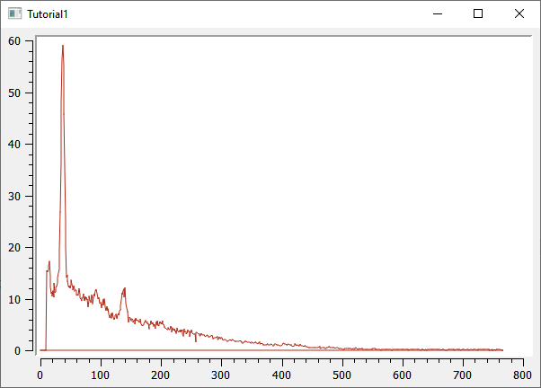
2.2.2. Adding a legend
Next we insert a legend (header QwtLegend or qwt_legend.h):
// show legend
QwtLegend * legend = new QwtLegend();
QFont legendFont;
legendFont.setPointSize(8);
legend->setFont(legendFont);
plot.insertLegend( legend , QwtPlot::BottomLegend); // plot takes ownershipHere, too, the header for the QwtLegend class is included at the top.
The legend is given a modified font here. Further customization of the legend is described in Chapter 9.
The legend can be placed left, right, above or below the drawing canvas, or inside the drawing canvas itself. The placement is specified in the call to insertLegend().
When insertLegend() is called, the plot again takes ownership of the legend object and takes care of freeing the memory.
2.2.3. Adding a diagram title
// add title
QwtText text("Gamma spectrum");
QFont titleFont;
titleFont.setBold(true);
titleFont.setPointSize(10);
text.setFont(titleFont);
plot.setTitle(text);The QwtText class (header QwtText or qwt_text.h) wraps a QString and adds functionality for rendering mathematical symbols via MathML (see Chapter 12.1).
2.2.4. Adding a diagram grid
Grid lines are drawn by the QwtPlotGrid drawing object (header QwtPlotGrid or qwt_plot_grid.h):
// show major and minor grid
QwtPlotGrid *grid = new QwtPlotGrid();
QPen gridPen(Qt::gray);
gridPen.setStyle(Qt::DashLine);
grid->setMajorPen(gridPen);
// Minor grid
grid->enableYMin( true );
gridPen.setColor(Qt::lightGray);
gridPen.setStyle(Qt::DotLine);
grid->setMinorPen(gridPen);
grid->attach( &plot ); // plot takes ownershipThe grid itself can be customized with respect to the pen (QPen) for the major and minor grid. The function enableYMin() switches on the minor grid for the Y axis.
As with the plot curves, attach() hands the QwtPlotGrid object to QwtPlot, which then takes care of memory management.
|
By default, a grid is bound to one x and one y axis, but you can also hide the grid lines for one of the axes. If, for example, you have a diagram with 2 y axes and want to display a grid for each (even though that usually looks confusing), then you need two |
By now the diagram already looks quite decent.

2.2.5. Axis configuration
QwtPlot has 4 axes built in, called:
-
QwtPlot::yLeftandQwtPlot::yRight -
QwtPlot::xBottomandQwtPlot::xTop
By default, the axes xBottom and yLeft are visible, as in the plot used so far.
Every drawing element in the plot (curves, markers, …) is assigned to one or more axes. In our introductory example the QwtPlotCurve uses the axes xBottom and yLeft by default.
The axes can be configured as follows.
// format axes
QFont axisFont;
axisFont.setPointSize(8);
axisFont.setBold(true);
QFont axisLabelFont;
axisLabelFont.setPointSize(8);
// X axis
QwtText axisTitle("Channel");
axisTitle.setFont(axisFont);
// set title text and font
plot.setAxisTitle(QwtPlot::xBottom, axisTitle);
// set font for axis numbers
plot.setAxisFont(QwtPlot::xBottom, axisLabelFont);
// Y axis
axisTitle.setText("Events");
plot.setAxisTitle(QwtPlot::yLeft, axisTitle);
plot.setAxisFont(QwtPlot::yLeft, axisLabelFont);The title of each axis is again set via a QwtText object (contains text and font).
The font for the numbers on the axes themselves is changed via setAxisFont().
The axes themselves can be customized in many ways, see Chapter 11.

By default, the axes automatically adjust to the value range of the displayed curves. Of course you can change this too, see Chapter 11.
2.2.6. Logarithmic axes
QwtPlot can also use logarithmic axes. For this you have to plug in a different scale computation class, the QwtLogScaleEngine (header QwtLogScaleEngine or qwt_scale_engine.h):
// logarithmic Y axis
QwtLogScaleEngine * logScale = new QwtLogScaleEngine();
plot.setAxisScaleEngine(QwtPlot::yLeft, logScale); // plot takes ownership
// set manual axis limits, since autoscale does not work sensibly with log axes
plot.setAxisScale(QwtPlot::yLeft, 1e-3,1000);When setAxisScaleEngine() is called, the plot again takes ownership of the object and then takes care of freeing the memory.
Chapter 11 describes the details of the ScaleEngine and gives further examples.

2.2.7. Marker lines
Another drawing element that you need from time to time is horizontal or vertical marker lines. As an example, let’s add such a line to the plot (header QwtPlotMarker or qwt_plot_marker.h):
QwtPlotMarker * marker = new QwtPlotMarker;
marker->setLabelOrientation(Qt::Vertical); // vertical line
marker->setLabelAlignment(Qt::AlignRight | Qt::AlignBottom); // label below and to the right of the line
marker->setValue(36, 0); // for vertical lines the x coordinate must be specified
QPen markerPen(QColor(40,60,255));
markerPen.setStyle(Qt::SolidLine);
marker->setLinePen(markerPen);
marker->setLineStyle(QwtPlotMarker::VLine);
QwtText markerLabel("207.50 keV");
QFont markerFont;
markerFont.setPointSize(8);
markerLabel.setFont(markerFont);
marker->setLabel(markerLabel);
marker->attach(&plot); // plot takes ownershipMarkers also have many configuration options, see Chapter 10.

Now the diagram itself is finished and we turn to user interaction.
2.3. Interacting with the diagram
QwtPlot offers the usual interaction options for the user, such as zooming in and out, or panning the plot section.
2.3.1. Zoom functionality with QwtPlotZoomer
The zoom functionality is added via the QwtPlotZoomer class (header QwtPlotZoomer or qwt_plot_zoomer.h):
// add zoomer
// Caution: do NOT pass QwtPlot itself as the 3rd argument, but plot.canvas()
QwtPlotZoomer * zoomer = new QwtPlotZoomer(QwtPlot::xBottom, QwtPlot::yLeft, plot.canvas()); // plot takes ownership
zoomer->setTrackerMode( QwtPlotPicker::AlwaysOn ); // show curve values under the cursorWhen you move the mouse over the diagram, you already see a changed cursor and, thanks to the call setTrackerMode(QwtPlotPicker::AlwaysOn), you now also see the x and y values (of the axes xBottom and yLeft) under the cursor.
You can zoom in by holding down the left mouse button and dragging a zoom rectangle. You can also do this several times in a row. QwtPlot internally remembers these zoom levels. You can zoom out by clicking the right mouse button, which always zooms out one zoom level.
|
The outermost zoom level is determined in the constructor of the |
There is one more peculiarity in the source code. Whereas the plot elements so far have always been added with member functions of the QwtPlot class, or via attach(), the zoomer object is, analogously to Qt classes, given as a child object of the drawing canvas and registers itself through that as an interactive element with the plot.
|
It is important to make sure that you pass the plot’s canvas object as the 3rd argument to the constructor of the In the constructor of the |
So that the zoomer knows which axes are to be manipulated when zooming, you have to specify the x and y axis in the constructor. If, for example, you want to zoom both y axes at the same time, you need two QwtPlotZoomer objects.
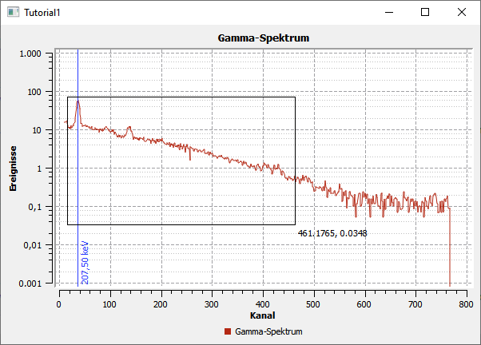
2.3.2. Panning the plot section with QwtPlotPanner
If you want to interactively move the section of a zoomed-in plot, you can add the QwtPlotPanner (header QwtPlotZoomer or qwt_plot_zoomer.h):
// add panner; as with the PlotZoomer, the canvas object must be passed as an argument
QwtPlotPanner * panner = new QwtPlotPanner(plot.canvas()); // plot takes ownership
panner->setMouseButton(Qt::MiddleButton); // middle mouse button pansAs with QwtPlotZoomer, the object is added as a child object of the canvas widget. It is customary to move screen content with the middle mouse button held down, so you set that with setMouseButton().
This concludes the introductory tutorial. With QwtPlot you can already create a fully functional and interactive diagram with just a few steps.
In this tutorial, QwtPlot was also the application widget. But if you want to insert QwtPlot into existing Designer form classes, there are various techniques:
-
the use of placeholder widgets
-
the integration of Qt Designer plugins for the Qwt library
These methods are described in Chapter 17.5.
Individual chapters are dedicated to all diagram types and further plot properties. For QwtPlot, only the functionality shipped with QwtPlot and the associated classes is covered first. Later chapters show how to extend the plot functionality by overriding/replacing the built-in functions.
3. Qwt Widgets and Input Components
Besides QwtPlot, the Qwt library contains a number of other input components, which are briefly introduced in this chapter.
Many of these components are modeled on classic displays and adjustment dials in scientific/technical instruments.
For displaying the scales, the components introduced below internally use the scale computation and scale drawing classes described in more detail in Chapter 11.2.
3.1. Slider
The QwtSlider class allows displaying various sliders that can be operated with the mouse or the keyboard (cursor keys). In contrast to the QSlider class, the scales can be defined much more flexibly and also non-linearly.
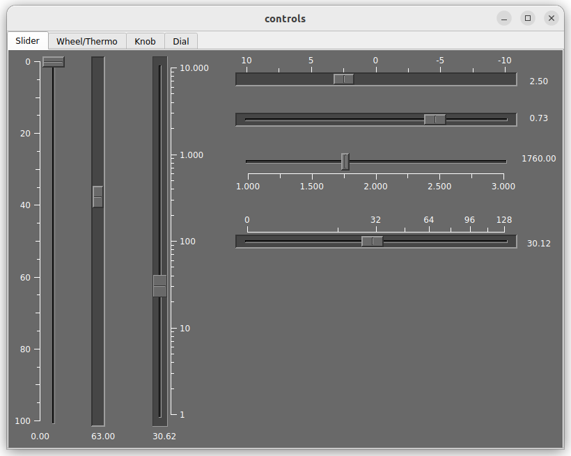
QwtSliderThe example in the screenshot above is included in the Qwt library as the controls example.
3.2. Dials/adjustment wheels and bar displays
The QwtWheel class shows a horizontal or vertical adjustment wheel. The QwtThermo class shows a bar display, but with a freely configurable color table. This allows, for example, color gradients or color jumps when certain threshold values are exceeded.
Qt itself offers the QProgressBar class for a bar display, but its appearance follows the respective platform style for progress bars and it also does not provide any scales.
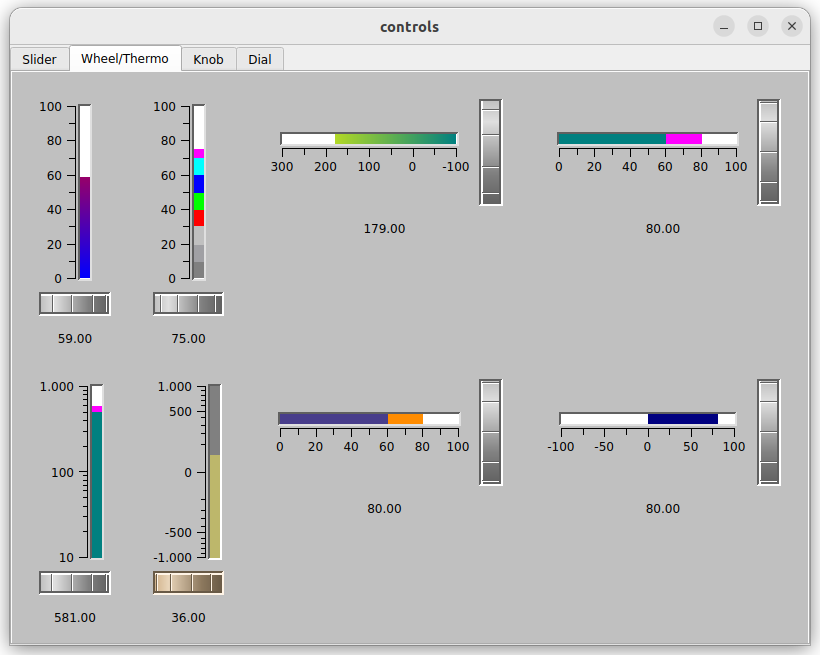
QwtWheel and QwtThermoThe example in the screenshot above is included in the Qwt library as the controls example.
3.3. Rotary knobs
The QwtKnob class shows a rotary knob, with equally flexibly configurable scale units. The Qt class QDial also offers a control dial, but again a much simpler one and with fewer options regarding scale display and scaling.
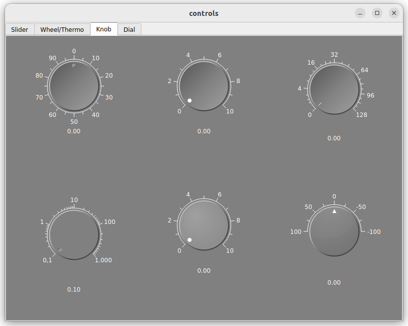
QwtKnobThe example in the screenshot above is included in the Qwt library as the controls example.
3.4. Analog pointer displays
The QwtDial class draws analog pointer displays, which can also be changed with the mouse/keyboard (if you enable that). The displays can be configured very individually in terms of color.
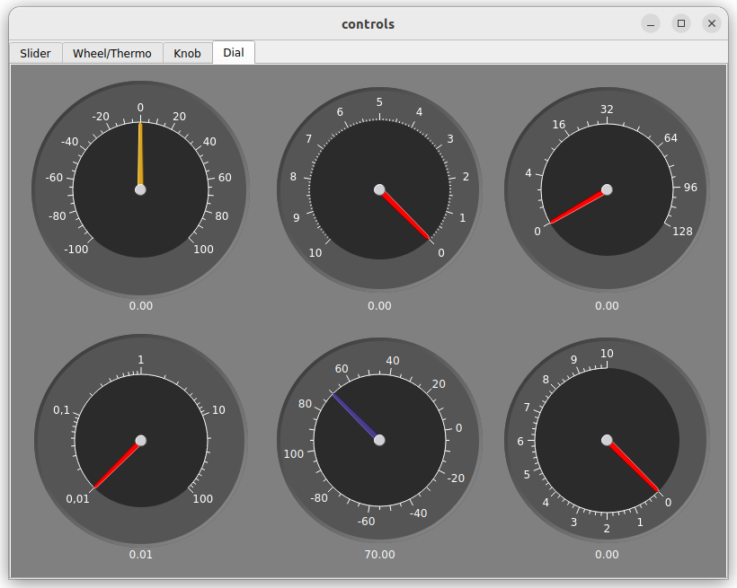
QwtDialThe example in the screenshot above is included in the Qwt library as the controls example.
It is perhaps also worth noting that the display needle itself is implemented by a separate class, independent of the QwtDial class. By default, QwtDialSimpleNeedle is used here, as in the screenshot above. But you can also go wild here and design and integrate arbitrary display needles yourself.
4. General Fundamentals of QwtPlot
QwtPlot is certainly the most useful and best-known component of the Qwt library. In contrast to many other Qt diagram components, QwtPlot lets you create and display all kinds of diagram types very flexibly (and efficiently).

QwtPlot with two y axes and an inset legend.Before the individual diagram types are introduced from Chapter 5 onwards, this chapter covers the essential fundamentals.
4.1. Structure and elements of the diagram component
QwtPlot consists of a title, surrounding axes, legends and the actual drawing canvas. All of these elements can be configured and shown/hidden.
4.1.1. Axes and coordinate system
The diagram itself is a Cartesian diagram with at most 4 axes, identified by the following enumeration values:
-
QwtPlot::xBottom -
QwtPlot::xTop -
QwtPlot::yLeft -
QwtPlot::yRight
The primary task of these axes is to convert between plot coordinates (x,y) and screen coordinates. Each of the four axes can be configured individually, which affects the min/max values and the axis scaling.
4.1.2. Diagram/drawing elements
Within the drawing canvas you can now draw a wide variety of elements, e.g.:
-
lines,
-
bars,
-
symbols,
-
markers,
-
legend entries,
-
grid,
-
… and many more
All of these objects are derived from the base class QwtPlotItem and therefore share certain common properties.

In a single diagram you can combine all kinds of elements, i.e. you can also display line diagrams together with bars, symbols and markers.
|
The drawing order, i.e. which drawing element covers another, is determined by the z attribute. This is controlled via the functions |
The diagram elements are positioned via plot coordinates. The conversion into screen coordinates, i.e. the concrete position on the drawing canvas, is done using the respectively assigned x and y axis. Since there are two x axes and two y axes, when displaying a diagram element at a particular x,y data point you necessarily need an assignment to one x axis and one y axis. This property is set on the individual drawing elements, with xBottom and yLeft being selected by default.
|
A drawing element is assigned to an axis with the member functions |
QwtPlotItem also declares and implements the virtual functions for drawing as well as for computing important layout data. This will be explained in more detail later in the advanced chapters. But now on to the individual drawing elements and the diagram types built from them.
4.1.3. Adding/removing drawing elements
All drawing elements are always created on the heap with new and added to the actual QwtPlot via the member function QwtPlotItem::attach(plot).
Drawing elements can be removed using the function QwtPlotItem::detach().
|
When If you still want to get the drawing element back, you call the member function |
You can also remove all drawing elements of a particular type:
// remove all curves and delete the curve objects in the process
plot.detachItems(QwtPlotItem::Rtti_PlotCurve, true); // detach and deleteThe first argument of detachItems() is the drawing element type. With the second argument you specify whether the object itself should be deleted, or only removed from the plot. In the latter case you have to take care of freeing the memory yourself again.
4.2. Data storage in QwtPlot / QwtSeriesStore
To display plot curves/bars or other drawing elements, the data for several data points (samples) is required. Depending on the requirements of the drawing element, there are various types of samples. For example, line curves usually need x,y value pairs, whereas interval curves need x,y1,y2 tuples.
All drawing elements that use such series data are children of the class QwtPlotSeriesItem.
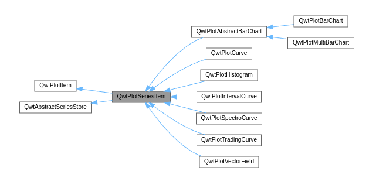
Data storage is handled by the template class QwtSeriesStore, which implements the abstract interface class QwtAbstractSeriesStore.
|
The combination used here in Qwt - template classes for storing data of individual types and, at the same time, implementation of common class functionality via virtual functions - once again nicely demonstrates the flexibility of C++. However, at first glance this makes it somewhat more complicated to understand the interaction between the data storage classes and the drawing element classes. Fortunately, you don’t need to know this in such detail in order to use |
Depending on the requirements of the individual drawing element/diagram type, different data is required:
-
QPointFfor regular series diagrams (lines) -
QwtIntervalSamplefor histograms and interval curves -
QwtPoint3Dfor spectrogram plots (color gradient diagrams) -
QwtOHLCSamplefor trading curves (OHLC - Open-High-Low-Close) -
QwtVectorFieldSamplefor vector fields

|
Most diagram elements/diagram classes have suitable interface functions for passing the plot data to the diagram. You therefore rarely need to work directly with |
4.3. Automatic drawing or drawing on demand
Drawing a complex plot can take quite a while, so when adjusting the plot it is often not necessary to redraw everything for each individual change. Instead, it is sufficient to redraw the plot after all data has been updated and other settings (axes, legends, …) have been adjusted.
Drawing here actually means two different work steps:
-
Recomputing the layout, i.e. sizes for axes, legends, title, labels, drawing canvas, etc. This also involves recomputing the axis scaling and thus the mapping of plot coordinates to pixel sizes.
-
The actual drawing (rendering) of the plot.
Step 1 is executed when you call QwtPlot::replot(). By default this is always done whenever you change any plot property. This automatic call can be switched on/off with QwtPlot::setAutoReplot().
// switch off automatic re-layouting
plot->setAutoReplot(false);|
Calling Switching off autoReplot can, however, be useful if, while adjusting individual plot properties, a temporarily inconsistent state could occur where re-layouting would only produce nonsense or something like a division by zero. In that case it is better to wait until all plot/curve properties have been fully updated and then call |
After a layout update in replot(), a drawing update is triggered via the Qt event queue. Drawing/rendering then happens only in the next frame refresh and also only once. So you can happily call replot() 1000 times and it will still be rendered only once. This saves a lot of time.
5. Curve Diagrams
The most common kind of diagram will probably be curve diagrams. Curve diagrams, i.e. line diagrams or series diagrams, are parametric curves in which the individual points are drawn one after another and, in the case of line diagrams, connected by lines. Neither the x nor the y values have to increase monotonically.
The QwtPlotCurve drawing element is, however, not only used for line diagrams in the classic sense, but also for steps, sticks, dot/symbol diagrams and so on. All of these variants have in common, though, that they expect an x vector and a y vector with data in plot coordinates.
The individual style of the curve is set with the function QwtPlotCurve::setStyle(). Depending on the style, further parameters can/must be specified. In the following sections the possible diagram types are shown in comparison, each for the same x/y data.
5.1. Passing data
As explained in Chapter 4.2, the class QwtSeriesStore<QPointF> is used for the internal data storage in QwtPlotCurve.
Data can be passed to the plot curve in several ways:
QVector<double> x{1,2,5,6,10,12,15,16,17};
QVector<double> y{5,4,8,8, 4, 5, 8, 9,11};
curve->setSamples(x, y);QVector<QPointF> samples{
QPointF(1,5),
QPointF(2,4),
QPointF(5,8)
};
curve->setSamples(samples);If the data is available in a C array or std::vector, QwtPlotCurve::setSamples() is a good choice.
std::vector<double> x{1,2,5,6,10,12,15,16,17};
std::vector<double> y{5,4,8,8, 4, 5, 8, 9,11};
const double * xdata = x.data();
const double * ydata = y.data();
unsigned int count = x.size();
curve->setSamples(xdata, ydata, count);|
When using |
With very large amounts of data and limited main memory, it can be useful not to copy the data into the plot, but to let the plot curves access the memory directly. For this there is the function QwtPlotCurve::setRawSamples(). The syntax is as in the previous example:
const double * xdata = x.data(); // x is a std::vector
const double * ydata = y.data(); // y is a std::vector
unsigned int count = x.size();
curve->setRawSamples(xdata, ydata, count);|
The variables and their memory area used in the call to |
A direct change of the data in memory becomes visible immediately on the next rendering of the plot. However, the plot and its drawing elements that have an interest in the value ranges of the plot curves must be informed manually about a change of the data. For this, simply call QwtPlot::replot().
5.2. Kinds of curves
5.2.1. Line diagram
Configuration of a QwtPlotCurve as a line:
QwtPlotCurve *curve = new QwtPlotCurve();
curve->setStyle(QwtPlotCurve::Lines);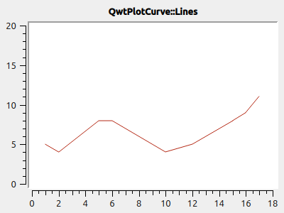
5.2.2. Sticks
Configuration of a QwtPlotCurve as vertical sticks:
QwtPlotCurve *curve = new QwtPlotCurve();
curve->setStyle(QwtPlotCurve::Lines);
curve->setOrientation(Qt::Vertical);
Alternatively, you can also draw the sticks horizontally. For this you additionally have to set the orientation with QwtPlotSeriesItem::setOrientation():
QwtPlotCurve *curve = new QwtPlotCurve();
curve->setStyle(QwtPlotCurve::Lines);
curve->setOrientation(Qt::Horizontal);
5.2.3. Step diagrams
If the data should not be connected linearly but rather represent steps, you can use the line type Steps.
The additional attribute QwtPlotCurve::Inverted specifies whether the step should be at the end of the interval or at the beginning of the interval. Curve attributes are set with QwtPlotCurve::setCurveAttribute():
QwtPlotCurve *curve = new QwtPlotCurve();
curve->setStyle(QwtPlotCurve::Steps);
curve->setCurveAttribute(QwtPlotCurve::Inverted, false);
If you look at the input data:
x y
1 5
2 4
5 8
...you notice that in the first interval, i.e. between x=1..2, the value y2=4 is drawn, and at position x1=1 the connecting line between y1=5 and y2=4 is drawn.
If you want to draw the first y value directly in the first interval (that would be the more natural expectation), you have to set the Inverted attribute:
QwtPlotCurve *curve = new QwtPlotCurve();
curve->setStyle(QwtPlotCurve::Steps);
curve->setCurveAttribute(QwtPlotCurve::Inverted, true);
5.2.4. Dots
At the respective x,y coordinates you can also simply draw only dots (even just single pixels). This is very fast compared to drawing symbols (see Chapter 5.3) and can be used for larger point clouds.
|
When using |
QwtPlotCurve *curve = new QwtPlotCurve();
curve->setStyle(QwtPlotCurve::Dots);
curve->setPen(QColor(180,40,20), 4); // width of 4 makes points better visible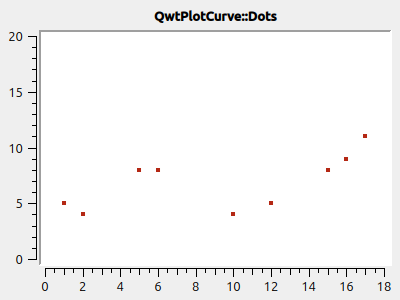
|
When visualizing point clouds, it can be helpful to use transparency/alpha blending. For this, simply set an alpha value smaller than 255 on the drawing color. |
QwtPlotCurve *curve = new QwtPlotCurve();
curve->setStyle(QwtPlotCurve::Dots);
curve->setPen(QColor(0,40,180,32), 2); // 2 pixels wide, alpha value 32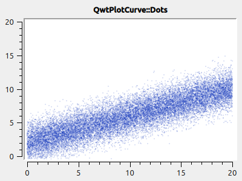
|
If you want a line diagram with visualization of the support points, you can of course insert two lines into the diagram: one with style |
5.2.5. No line
If you want to draw a curve exclusively with symbols (see Chapter 5.3), you can also switch off the drawing of the polyline completely:
curve->setStyle(QwtPlotCurve::NoCurve);5.3. Symbols/points
At the respective x,y coordinates of a curve you can also draw symbols. For this the Qwt library offers the class QwtSymbol.
You add a symbol to a curve as follows:
// add symbol
QwtSymbol * symbol = new QwtSymbol(QwtSymbol::Ellipse);
symbol->setSize(8);
symbol->setPen(QColor(0,0,160), 2);
symbol->setBrush(QColor(120,170,255));
curve->setSymbol(symbol); // Curve takes ownership of symbol
First the symbol to be used is created on the heap with new. The constructor takes the type of the symbol (see also the gallery below). But you can also set this later via QwtSymbol::setStyle().
Also important is the size of the symbol, set via QwtSymbol::setSize() in pixels. This size scales the symbol depending on its shape.
Also important are the properties pen and brush (QwtSymbol::setPen() and QwtSymbol::setBrush()). The pen is used for drawing the outline and the brush, if set, for filling the shape. Some symbols such as the cross are not filled, so the brush has no effect here.
Finally, the symbol is given to the curve with QwtPlotCurve::setSymbol().
|
When |
The symbol class is quite powerful and can draw a wide variety of symbols:
-
ready-made shapes such as circles, rectangles, crosses, etc. (style
QwtSymbol::Ellipse…QwtSymbol::Hexagon) -
user-defined images/pixmaps (style
QwtSymbol::Pixmap) -
specific graphics encapsulated in the class
QwtGraphicand generated by a number ofQwtPainterCommandinstructions (styleQwtSymbol::Graphic) (see also [sec:qwtGraphic]) -
SVG documents (style
QwtSymbol::SvgDocument) -
user-defined shapes defined by a QPainterPath (style
QwtSymbol::Path)
5.3.1. Symbol styles/built-in symbol shapes
There are numerous built-in symbol shapes (in bold in the diagram title is the respective QwtSymbol::Style enumeration name):
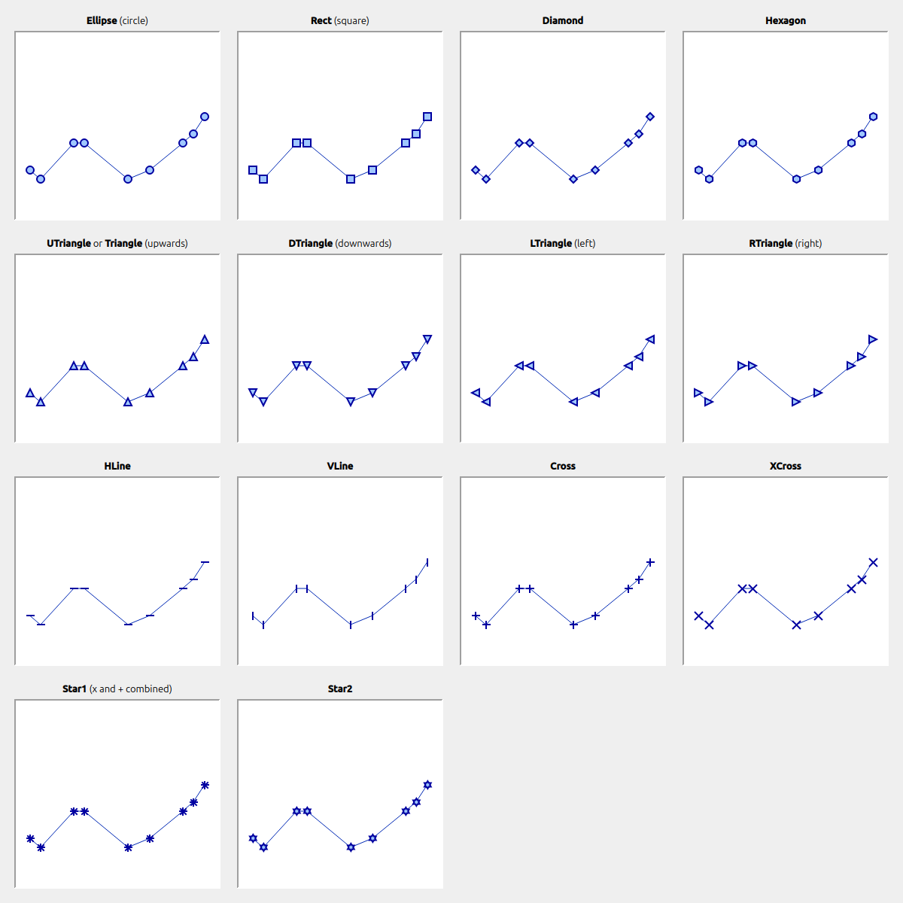
Symbols do not always have to be square. If you set the size of a symbol with
symbol->setSize(10);then width=height=10 is used automatically. Alternatively, you can also define a rectangle as the size:
symbol->setSize(w,h);
// or via QSize
QSize s(w,h);
symbol->setSize(s);That is also why there are no separate line styles for circle and ellipse or rectangle and square.
5.3.2. User-defined shapes via QPainterPath
You can set arbitrary custom symbol shapes by using the QPainterPath class.
The following example generates a light bulb symbol:
// add symbol
QwtSymbol * symbol = new QwtSymbol(QwtSymbol::Path);
QPainterPath p;
p.addEllipse(QRectF(-10,-10,20,20));
p.moveTo(-7,-7);
p.lineTo(7,7);
p.moveTo(7,-7);
p.lineTo(-7,7);
symbol->setPath(p);
symbol->setPen(QColor(0,0,120), 2);
symbol->setBrush(QColor(160,200,255));
curve->setSymbol(symbol); // Curve takes ownership of symbol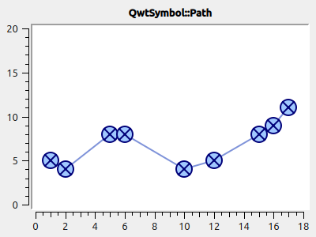
|
If you define a non-rectangular geometry with QPainterPath, you should, when changing the size via |
5.3.3. SVG symbols
You can render and display your own SVG files. For this you only have to read in/define an SVG file and set it as a symbol:
QwtSymbol * symbol = new QwtSymbol(QwtSymbol::SvgDocument);
QFile f("symbol.svg");
f.open(QFile::ReadOnly);
QTextStream strm(&f);
QByteArray svgDoc = strm.readAll().toLatin1();
symbol->setSvgDocument(svgDoc);
curve->setSymbol(symbol); // Curve takes ownership of symbol|
Here, too, you have to pay attention to the aspect ratio when specifying the size and mostly use the variant |
Sometimes the anchor point of the SVG image is not in the center, as in the example above:

You can change the anchor point, i.e. the centering point of the symbol, with QwtSymbol::setPinPoint(). The coordinates of the pin point are measured from the left/top of the SVG image:
...
QRect br = symbol->boundingRect(); // size of symbol
symbol->setPinPoint(QPointF(br.width()/2-1,br.height()-3));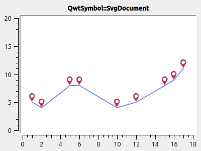
|
You can also deactivate the manually set anchor point again with |
5.3.4. Image symbols (pixmaps)
As an alternative to custom vector graphic symbols, you can also use arbitrary images as symbols. This is done analogously to the SVG symbols:
QwtSymbol * symbol = new QwtSymbol(QwtSymbol::Pixmap);
QwtText t("QwtSymbol::Pixmap");
QPixmap pixmap;
pixmap.load("symbol.png");
symbol->setPixmap(pixmap);
QRect br = symbol->boundingRect(); // size of symbol
symbol->setPinPoint(QPointF(br.width()/2,br.height()-1));
curve->setSymbol(symbol); // Curve takes ownership of symbol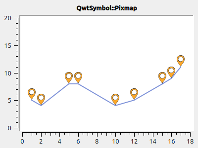
5.4. Filled curves
Besides the pen, a curve can also take a brush. Then the curve is filled down to the x axis:
curve->setBrush(QColor(0xa0d0ff));
You can also shift the baseline for the fill:
curve->setBaseLine(8);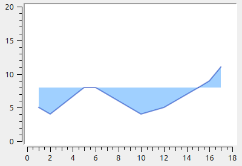
5.5. Legend entries
Every QwtPlotCurve creates its own icon for display in the legend. The text shown in the legend is set with QwtPlotItem::setTitle(). To show the legend, you first have to create a legend and insert it into the plot, as described in Chapter 9.

In addition, QwtPlotCurve::setLegendAttribute() can be used to specify whether a filled rectangle, a line or the series symbol is drawn in the legend.
These properties are set individually for each QwtPlotCurve:
curve->setTitle("Line 1");
curve->setLegendAttribute(QwtPlotCurve::LegendShowLine, true);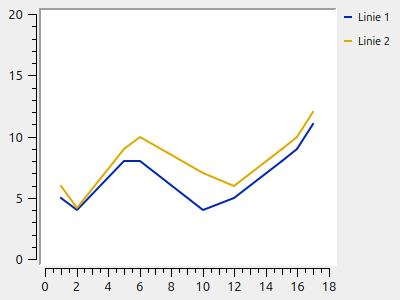
For lines with markers you can also draw the markers:
curve->setTitle("Line 1");
curve->setLegendAttribute(QwtPlotCurve::LegendShowLine, true);
curve->setLegendAttribute(QwtPlotCurve::LegendShowSymbol, true);
QwtSymbol * symbol = new QwtSymbol(QwtSymbol::Rect);
symbol->setSize(6);
symbol->setPen(QColor(0,0,160), 1);
symbol->setBrush(QColor(160,200,255));
curve->setSymbol(symbol); // Curve takes ownership of symbol
|
If you use different line symbols, this affects the automatically determined legend icon size. As a result, the legend titles are then sometimes not perfectly aligned, as in the screenshot above. You can, however, change the size of the legend icons uniformly with |
curve->setTitle("Line 1");
curve->setLegendAttribute(QwtPlotCurve::LegendShowLine, true);
curve->setLegendAttribute(QwtPlotCurve::LegendShowSymbol, true);
QwtSymbol * symbol = new QwtSymbol(QwtSymbol::Rect);
symbol->setSize(6);
symbol->setPen(QColor(0,0,160), 1);
symbol->setBrush(QColor(160,200,255));
curve->setSymbol(symbol); // Curve takes ownership of symbol
// uniform legend icon width independent of the chosen symbol
curve->setLegendIconSize(QSize(30,16));
|
Since the legend icons are configured when setting curve symbols, the change of the legend icon sizes must always be done after setting/adjusting curve symbols. So the call to |
|
All information about legends, and also specific customizations, e.g. how to draw your own icons, can be found in Chapter 9. |
5.6. Paint attributes, drawing speed and performance optimization for large data series
Drawing large data series can sometimes take quite a while. Especially when resizing the plot window, this then manifests as a noticeable delay in the screen redraw. The larger the data series are, i.e. the more points they contain, the longer the drawing of the plot generally takes. This section is about various properties and capabilities of QwtPlotCurve that directly affect the drawing speed.
5.6.1. Paint attributes (PaintAttribute / PaintAttributes)
The QwtPlotCurve class has various paint attributes that configure the algorithms used in more detail. Here is a short list first; the individual attributes and their effects are described in more detail later:
-
ClipPolygons- this thins out the data series to be drawn so that only the parts of the curve visible in the current zoom window are drawn. It is active by default and is necessary for SVG export. Otherwise, this filtering out of points lying outside is effective mainly when zooming in. -
FilterPoints- this filters out points/line segments from the data series that would not be drawn anyway because they lie on top of each other. -
FilterPointsAggressive- only for line typeQwtPlotCurve::Lines: replaces many short overlapping polygon pieces with individual line segments -
MinimizeMemory- only for line typeQwtPlotCurve::Dots: if switched on, prevents a possibly large polygon copy from being created during the transformation of the data series from plot coordinates to render coordinates. Instead, all point coordinates are transformed, clipped and drawn individually. Since this requires a certain amount of extra effort for each point, it is generally somewhat slower. -
ImageBuffer- only for line typeQwtPlotCurve::Dots: a very special optimization where the points (only one pixel per point) are first drawn into aQImage. This is done in parallel and can therefore be very fast, but it is only effective with very large sets of points.
|
The paint attribute |
5.6.2. Point filter
By using the data filter FilterPoints you can, with very large series data, only really draw the data that affects the diagram. If, for example, 100 data points land on the same pixel, you do not need to draw them all. Filtering out invisible points and line segments depends, of course, on the zoom level and is therefore integrated into the drawing routine of QwtPlotCurve.
|
Besides filtering out superfluous points by setting the paint attribute |
The paint attribute QwtPlotCurve::FilterPoints is set by default and causes duplicate points to be filtered out already when transforming the data series coordinates into screen coordinates (this is done by the QwtPointMapper class). If a data series contains, for example, 100000 evenly distributed points along the x axis and is drawn on a 1000-pixel-wide plot, then 100 points each share an x pixel coordinate. If, after the coordinate conversion, two consecutive points have identical pixel coordinates, the duplicate points are removed. This function, switched on by default, already makes a big difference to the drawing speed.
To illustrate this, here is a small test program for the filter functions:
#include <QApplication>
#include <QElapsedTimer>
#include <QDebug>
#include <cmath>
#include <qwt_plot.h>
#include <qwt_plot_curve.h>
#include <qwt_weeding_curve_fitter.h>
// specialized QwtPlotCurve with time measurement around drawCurve()
class BenchmarkedPlotCurve : public QwtPlotCurve {
protected:
void drawCurve(QPainter *p, int style,
const QwtScaleMap & xMap, const QwtScaleMap & yMap,
const QRectF & canvasRect, int from, int to) const override
{
QElapsedTimer timer;
timer.start();
QwtPlotCurve::drawCurve(p, style, xMap, yMap, canvasRect, from, to);
qDebug() << "QwtPlotCurve::drawCurve(): " << timer.elapsed() << "ms";
}
};
int main(int argc, char *argv[]) {
QApplication a(argc, argv);
QwtPlot plot;
plot.setContentsMargins(8,8,8,8);
plot.setCanvasBackground( Qt::white );
// generate data to be displayed
QVector<double> x, y;
for (unsigned int i=0; i<10000000; ++i) {
x.append(i);
y.append(std::sin(i*0.00001));
}
QwtPlotCurve *curve = new BenchmarkedPlotCurve();
curve->setPen(QColor(180,40,20), 1);
curve->setRenderHint( QwtPlotItem::RenderAntialiased, true); // use antialiasing
curve->setPaintAttribute(QwtPlotCurve::FilterPoints, false); // switch off point filter
curve->setSamples(x, y);
curve->attach(&plot); // Plot takes ownership
plot.resize(1000,800);
plot.show();
return a.exec();
}The test program generates 10 million data points (several sine waves) and then draws them into a 1000x800 pixel diagram, initially without the point filter. For this, in the line
curve->setPaintAttribute(QwtPlotCurve::FilterPoints, false);the paint attribute FilterPoints is switched off. The drawing time for the curve, including the time for the data filtering, is measured in the derived QwtPlotCurve and the small wrapper around the central drawCurve() function.
On my machine the program outputs about 650 ms in the release build. All 10 million points are really taken into the polyline to be drawn and drawn on the painter (which of course discards line segments of length 0, but needs some time for that).
If you now switch the FilterPoints attribute back on, then after the filtering the polygon contains only about 24500 points and the drawing takes about 300 ms.
|
With the paint attribute |
5.6.3. Aggressive point filtering
If data series are very noisy and at the same time contain very large amounts of data, then several line segments can overlap. For example, several lines with the same x screen coordinate are then drawn on top of each other, even though a single line drawn between the minimum and maximum y coordinate would suffice.
The paint attribute FilterPointsAggressive switches on a pre-computation that performs exactly this kind of optimization (also implemented in the QwtPointMapper class) and turns several overlapping vertical line segments into a single line (which is also why this optimization only makes sense for the line type QwtPlotCurve::Lines).
To test this, we modify the program above and generate a strongly noisy curve:
QVector<double> x, y;
for (unsigned int i=0; i<1000000; ++i) {
x.append(i);
y.append(QRandomGenerator64::global()->generateDouble());
}Without FilterPointsAggressive, drawing takes about 1500 ms. Although the data series consists of "only" 1 million points, the line segments are significantly longer than with the sine wave and it takes longer to draw them. The paint attribute FilterPoints can also hardly throw out any points because of the strongly fluctuating y values (the line segments almost never have a length of 0).
If you now switch on the attribute with
curve->setPaintAttribute(QwtPlotCurve::FilterPointsAggressive, true);the drawing time shortens to about 32 ms !!!! After the filtering, the polygon to be drawn has only about 3670 points left.
|
Using the paint attribute |
If you look at the diagrams with and without FilterPointsAggressive in comparison, you see minor differences.

FilterPoints, antialiasing switched on
FilterPointsAggressive, antialiasing switched onWith antialiasing you see differences in the semi-transparent segments. Without antialiasing you have to look very closely to see the small differences.

FilterPoints, antialiasing switched off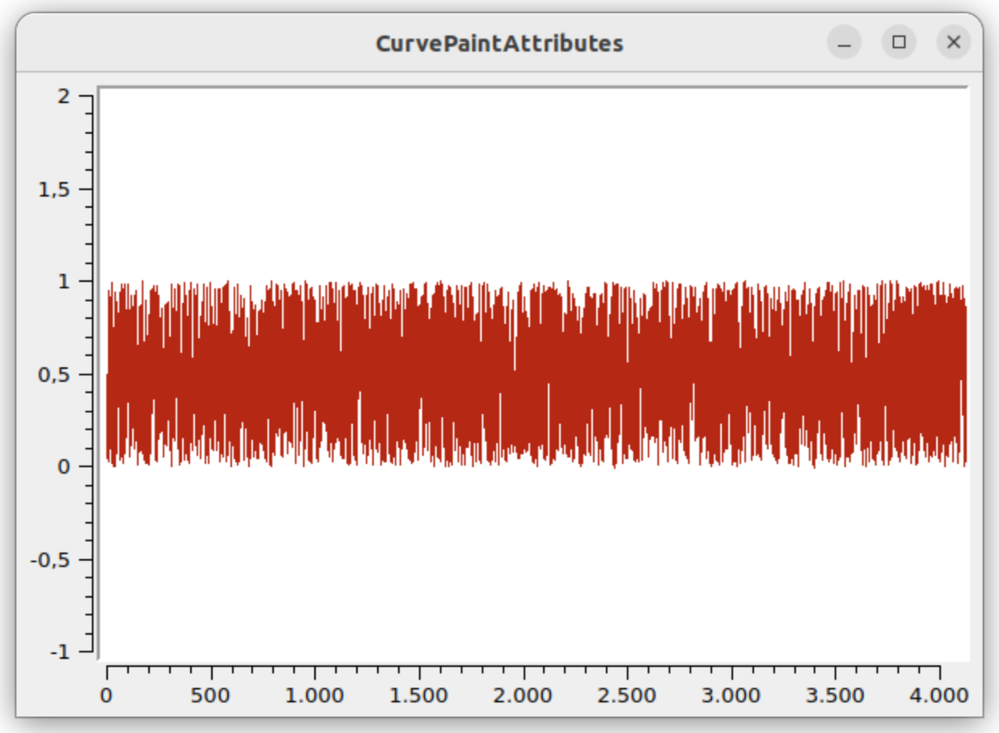
FilterPointsAggressive, antialiasing switched off(For comparison, download both images and display them alternately in an image viewer, then you can see the small differences.)
|
In contrast to After the scaling from plot coordinates to screen coordinates, for example, the following polygon is available for filtering: x y ---------- 6 230 6 379 6 602 7 304 7 602 7 81 7 155 8 424 ... then after the filtering the polygon contains only the points: x y ---------- 6 230 6 602 7 304 7 602 7 81 8 424 ... The line segments at x drawing coordinates 6 and 7 were merged here. But whereas previously a line was drawn from (7,155) → (8,424), now a line is drawn from (7,81) → (8,424), which gives a minimally different appearance in detail. The differences in the output are, however, so small that for the relevant use cases, i.e. larger data series and strongly fluctuating values, switching on the paint attribute |
5.6.4. Polygon clipping
Depending on the choice of the plot section, to be set via axis scaling (see Chapter 11) or interactively via the plot zoomer (see Chapter 13), sometimes only parts of curves are drawn. In this case it makes sense to limit the polygon to the visible ranges only. The QwtPlotCurve class offers this functionality by switching on the paint attribute QwtPlotCurve::ClipPolygons.
|
When drawing the plot on screen, you could also leave out the polygon clipping, since the Qt painter itself performs clipping. When exporting data into an SVG file (see Chapter 15), however, the clipping is absolutely necessary. |
By default the QwtPlotCurve::ClipPolygons attribute is switched on. The clipping is, by the way, applied only after the point filter algorithm, so that a data reduction in that step has a positive effect on the time for the clipping.
Interestingly, polygon clipping affects rendering performance only imperceptibly when rendering to the screen.
For the 10 million point sine curve plot above (antialiasing on, FilterPoints on, FilterPointsAggressive off, ClipPolygons on), the drawing time for the complete diagram is about 300 ms. Zoomed in with
plot.setAxisScale(QwtPlot::xBottom, 150000, 160000);
plot.setAxisScale(QwtPlot::yLeft, 0.99, 1);the render time increases to about 370 ms. If you now switch off ClipPolygons, then it takes 290 ms for the complete plot and 410 ms for the zoomed-in plot.
|
In the zoomed-in state the clipping algorithm takes longer, but in return the drawing is somewhat faster. Both effects work against each other, but in the end it is, in my test case, minimally slower than in the zoomed-out state. |
The difference between 300 ms and 290 ms for the complete plot is due to the overhead for the polygon clipping function, which of course has no effect for the fully visible plot.
In the strongly zoomed-in state, the plot with polygon clipping switched on draws about 40 ms faster, which should, however, rarely be significant.
|
The influence of the Only when switching off the Conclusion: leave |
5.7. Curve filters/curve fitters
The QwtPlotCurve can, before the actual rendering, pass the given raw data to an algorithm that smooths the data or lays a continuous curve through the data points. These operations depend on the current zoom level and the plot size, because depending on the resolution the course of the fitted curve is recomputed. This gives better quality than pre-computing the data and plotting a polyline through pre-computed curves. That is why this functionality is integrated directly into QwtPlot.
You give such a fitting/filter algorithm to the curve by handing it a class derived from QwtCurveFitter.
Various implementations of this interface are shipped:

QwtCurveFitter5.7.1. Curve smoothing/spline interpolation
Let’s first look at the QwtSplineCurveFitter. This class encapsulates an algorithm that computes a smooth course from the given support points of the curve. There are various mathematical algorithms for this.
Each of these algorithms is implemented in a class derived from QwtSpline.

QwtSplineThe result can best be illustrated with a simple parametric data set:
QVector<double> x{1,2,5,6,10,12,15,16,8};
QVector<double> y{5,4,8,8, 4, 5, 8, 9,10};
// add curve
curve = new QwtPlotCurve();
curve->setStyle(QwtPlotCurve::Lines);
curve->setPen(QColor(0,220,20), 2);
curve->setRenderHint( QwtPlotItem::RenderAntialiased, true ); // use antialiasing
curve->setSamples(x, y);
// create SplineFitter object
QwtSplineCurveFitter * splineFitter = new QwtSplineCurveFitter;
// choose spline implementation, here QwtSplinePleasing
QwtSplinePleasing * spline = new QwtSplinePleasing();
// set spline algorithm
splineFitter->setSpline(spline); // takes ownership
// give SplineFitter object to the curve
curve->setCurveFitter(splineFitter); // takes ownership
// switch on fitting
curve->setCurveAttribute(QwtPlotCurve::Fitted, true);
curve->attach(&plot); // takes ownershipIt is important that the use of the curve fitter/filter is switched on explicitly with
curve->setCurveAttribute(QwtPlotCurve::Fitted, true);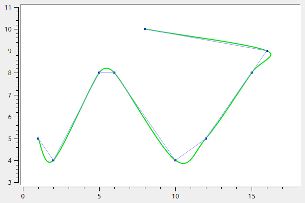
The Qwt library comes with a whole range of different algorithms and matching implementations:
-
QwtSplinePleasing: "QwtSplinePleasing is some sort of cardinal spline, with non C1 continuous extra rules for narrow angles. It has a locality of 2. The algorithm is the one offered by a popular office package." -
QwtSplineLocal: "QwtSplineLocal offers several standard algorithms for interpolating a curve with polynomials having C1 continuity at the control points. All algorithms are local in a sense, that changing one control point only few polynomials."-
Cardinal: "The cardinal spline interpolation is a very cheap calculation with a locality of 1" -
ParabolicBlending: "Parabolic blending is a cheap calculation with a locality of 1. Sometimes is also called Cubic Bessel interpolation." -
Akima: "The algorithm of H.Akima is a calculation with a locality of 2." -
PChip: "Piecewise Cubic Hermite Interpolating Polynomial (PCHIP) is an algorithm that is popular because of being offered by MATLAB. It preserves the shape of the data and respects monotonicity. It has a locality of 1."
-
-
QwtSplineCubic: "A cubic spline is a spline with C2 continuity at all control points. It is a non local spline, what means that all polynomials are changing when one control point has changed."
|
Only |
For comparison, the various spline algorithms are shown:
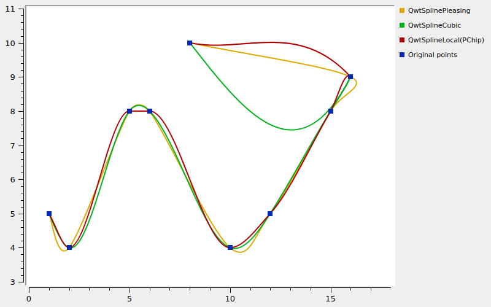
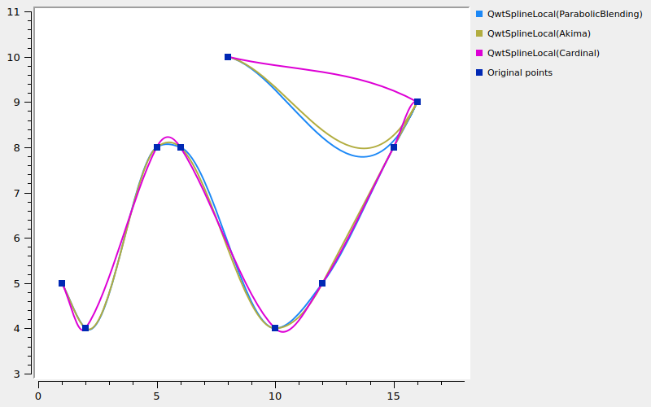
|
Although the various spline implementations are primarily intended for QwtPlot, there is nothing wrong with using them for general spline interpolation tasks. What the spline classes in the Qwt library can do is described in detail in Chapter 16.2. |
5.7.2. PolarCurveFitter
This curve filter is intended for polar diagrams, see [sec:polarPlots].
5.7.3. Data reduction filter
As already described in Chapter 5.6, the QwtPlotCurve class already comes with a number of its own functions to filter out unnecessary points and line segments. These are, however, primarily useful for raster output, i.e. on screen.
When outputting to vector formats (PDF/SVG), the paint attribute filters QwtPlotCurve::FilterPoints or QwtPlotCurve::FilterPointsAggressive are not used, since they only work with rounded coordinates.
|
The data reduction methods enabled by setting the paint attributes |
For data reduction on vector exports, however, you can use an alternative point filter algorithm to remove points that are not needed. Such a data reduction filter is implemented in the QwtWeedingCurveFitter class. This one really is a filter and removes data points according to certain rules.
Concretely, the algorithm tries to remove all points that are already sufficiently well approximated by linear interpolation between the neighboring points.
For testing, a sine wave is generated again:
QVector<double> x, y;
for (unsigned int i=0; i<10000000; ++i) {
x.append(i);
y.append(std::sin(i*0.000001)*330);
}The example from Chapter 5.6 is now extended with the QwtWeedingCurveFitter:
QwtWeedingCurveFitter * weedingFitter = new QwtWeedingCurveFitter;
curve->setCurveFitter(weedingFitter);
curve->setCurveAttribute(QwtPlotCurve::Fitted, true);This curve filter is used like the previous curve filters, and here, too, you must not forget to set the curve attribute QwtPlotCurve::Fitted.
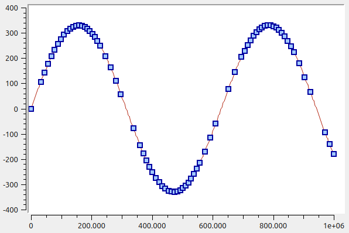
The WeedingCurveFitter reduces the number of data points significantly, as here with rather smooth curves. In the example above, of the originally 10 million points, just 78 remain. To visualize the resulting support points, a second data series was created, where the data was directly reduced in advance from the data points with the QwtWeedingCurveFitter class (see also Chapter 5.7.3.2).
An important parameter for the algorithm is the allowed tolerance, to be set in the constructor or via QwtWeedingCurveFitter::setTolerance(double). This tolerance is an absolute value based on the y coordinates in the passed polygon. Depending on the order of magnitude of the y values of the points, the points are filtered differently. This means that with larger plots and correspondingly larger pixel resolution in the y direction, more support points are also generated and the quality of the diagram does not suffer.
The tolerance parameter roughly has the following effect when the y values are in the order of magnitude of 100 (as in the example above).
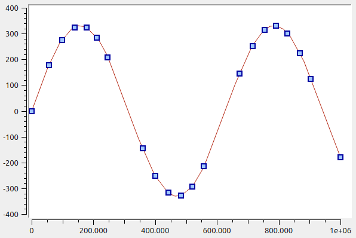


The second parameter of the QwtWeedingCurveFitter class is the chunk size, set with QwtWeedingCurveFitter::setChunkSize(int).
The original polygon is split into pieces of the given chunk size and the algorithm is applied to the individual pieces individually. In doing so, at least one point is generated per chunk. So if you were to choose a chunk size of 100000 for the example above, you would get 200 points (even with tolerance 10). The algorithm then has somewhat less to do and is finished after about 50 ms, instead of after about 270 ms as before. But if you consider that here 10 million points are turned into a very small polygon with fewer than 100 points, without the data quality visibly suffering, then the algorithm is (especially on today’s hardware) overall very fast.
|
The |
Optimizing drawing speed with QwtWeedingCurveFitter
You might now get the idea of using the QwtWeedingCurveFitter to speed up the on-screen display - after all, there are fewer points to draw. You can test this with a small benchmark program:
#include <QApplication>
#include <QPen>
#include <QElapsedTimer>
#include <QDebug>
#include <QTimer>
#include <cmath>
#include <qwt_plot.h>
#include <qwt_plot_curve.h>
#include <qwt_weeding_curve_fitter.h>
#include <qwt_plot_canvas.h>
class BenchmarkedPlotCanvas : public QwtPlotCanvas {
public slots:
// slot, when called, resizes parent QwtPlot window
void resizePlot() {
((QWidget*)parent())->resize(2400,1200);
}
protected:
void paintEvent(QPaintEvent * event) override {
QElapsedTimer timer;
timer.start();
QwtPlotCanvas::paintEvent(event);
qDebug() << "QwtPlotCanvas::paintEvent(): " << timer.elapsed() << "ms";
}
};
class BenchmarkedWeedingCurveFitter : public QwtWeedingCurveFitter {
public:
QPolygonF fitCurve(const QPolygonF & polygon) const override {
QElapsedTimer timer;
timer.start();
const QPolygonF & stripped = QwtWeedingCurveFitter::fitCurve(polygon);
qDebug() << "QwtWeedingCurveFitter::fitCurve():"
<< polygon.count() << "->" << stripped.count()
<< "points: " << timer.elapsed() << "ms";
return stripped;
}
};
int main(int argc, char *argv[]) {
QApplication a(argc, argv);
QwtPlot plot;
plot.setContentsMargins(8,8,8,8);
// use custom canvas class with benchmark wrapper
BenchmarkedPlotCanvas * canvas = new BenchmarkedPlotCanvas;
plot.setCanvas(canvas);
plot.setCanvasBackground( Qt::white );
// generate data to be displayed
QVector<double> x, y;
for (unsigned int i=0; i<10000000; ++i) {
x.append(i);
y.append(std::sin(i*0.00001));
}
QwtPlotCurve *curve = new QwtPlotCurve();
curve->setPen(QColor(180,40,20), 1);
curve->setRenderHint( QwtPlotItem::RenderAntialiased, true); // use antialiasing
curve->setSamples(x, y);
curve->attach(&plot); // Plot takes ownership
// use WeedingCurveFitter with benchmark wrapper
QwtWeedingCurveFitter * weedingFitter = new BenchmarkedWeedingCurveFitter;
curve->setCurveFitter(weedingFitter);
curve->setCurveAttribute(QwtPlotCurve::Fitted, true);
plot.show();
plot.resize(1000,800);
QTimer::singleShot(1000, canvas, &BenchmarkedPlotCanvas::resizePlot);
QTimer::singleShot(4000, &plot, &BenchmarkedPlotCanvas::close);
return a.exec();
}In the benchmark program above, the classes QwtPlotCanvas and QwtWeedingCurveFitter are derived and the relevant drawing routines are wrapped with time measurement.
It is important to note that the paint attributes FilterPoints and ClipPolygons (see Chapter 5.6) are switched on by default.
If you run the program, you see with the large plot at resolution 2400x1200 that of the 10 million points only 284 points remain after the QwtWeedingCurveFitter. That should surely lead to a significantly faster drawn plot, right?
| CurveFitter | FilterPoints | ClipPolygons | Fitter algorithm [ms] | Total drawing [ms] |
|---|---|---|---|---|
on |
on |
on |
670 |
1260 |
on |
off |
on |
660 |
1200 |
on |
on |
off |
660 |
860 |
on |
off |
off |
660 |
820 |
off |
on |
on |
--- |
320 |
off |
off |
on |
--- |
870 |
off |
on |
off |
--- |
320 |
off |
off |
off |
--- |
550 |
In no variant is the option with WeedingFitter faster. In the output in fitCurve() you notice that, regardless of the FilterPoints option, the WeedingFitter always gets all 10 million points passed to it. And the polygon clipping algorithm also gets the original polygon passed to it.
This then leads to the situation that although the QwtWeedingCurveFitter ultimately shrinks the polygon very significantly, the extra effort in the algorithms is enormous because the point filtering is dropped.
|
Qwt internals
When you switch on the curve attribute If you reactivate the rounding alignment directly in the Qwt source code despite the you see the real influence of the
That is marginally faster than the variant without |
As you can see, even patching the Qwt source code does not bring a significant improvement. The final conclusion is therefore: the QwtWeedingCurveFitter is primarily useful as a data reduction filter for vector plot data exports.
Use for data reduction in advance
You can, however, also use the QwtWeedingCurveFitter class for data reduction outside the QwtPlotCurve, i.e. you reduce the data passed to the curve in advance. And here lies the real potential for a performance increase.
In this case you use the QwtWeedingCurveFitter algorithm to thin out the original data series and pass a smaller polygon to the PlotCurve right away. The following source code takes the points of the original data series and transfers them into a polygon, which is then passed to the QwtWeedingCurveFitter.
QwtWeedingCurveFitter for data reduction outside of QwtPlot// use curve fitter to reduce data to plot
QPolygonF poly;
for (int i=0; i<x.count(); ++i)
poly << QPointF(x[i],y[i]);
QwtWeedingCurveFitter weedingAlgorithm(0.001);
poly = weedingAlgorithm.fitCurve(poly);
// set weeeded-out polygon in curve
curve->setSamples(poly);The function QwtWeedingCurveFitter::fitCurve(QPolygonF) returns the correspondingly reduced polygon.
|
If you use the |
Now the algorithm needs about 800 ms once, but drawing on screen and updating the plot on plot resize takes a minimal 2 ms, and that is a genuine performance increase.
|
A really enormous performance increase is possible with the |
6. Interval Curves
A special kind of curve is the interval curve, provided via the class QwtPlotIntervalCurve.
In principle, this is a curve with two y values per x coordinate in the data set. Two regular curves are drawn and the area between them is filled. You can also use this well to draw stacked line diagrams.
QVector<double> x{1,2,5,6,10,12,15,16,17};
QVector<double> y1{2,2,3,4, 2, 4, 4, 5,11};
QVector<double> y2{6,4.4,9,10, 5.5, 5.7, 9, 11,12};
QVector<QwtIntervalSample> intervalSamples;
for (int i=0; i<x.count(); ++i)
intervalSamples.append(QwtIntervalSample(x[i],y1[i],y2[i]));
QwtPlotIntervalCurve *curve = new QwtPlotIntervalCurve();
curve->setStyle(QwtPlotIntervalCurve::Tube);
curve->setPen(QColor(0,40,180), 2);
curve->setBrush( QColor(60,200,255) );
curve->setRenderHint( QwtPlotItem::RenderAntialiased, true ); // use antialiasing
curve->setSamples(intervalSamples);
curve->attach(&plot); // Plot takes ownership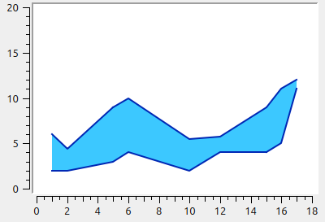
The function setSamples() comes in two variants:
-
QwtPlotIntervalCurve::setSamples( const QVector< QwtIntervalSample >& ): expects a vector of interval samples, consisting of an x coordinate, a lower and an upper y value -
QwtPlotIntervalCurve::setSamples( QwtSeriesData< QwtIntervalSample >* ): expects aQwtSeriesDataobject (see Chapter 4.2) which becomes the property of the interval curve. This function corresponds to the functionsetData()of the parent classQwtSeriesStore.
You can enhance the appearance a bit further by using a gradient for the fill of the curve. For this you simply give the curve a QBrush that was created with a gradient.
...
QLinearGradient grad(0,90,0,220);
grad.setColorAt(0, QColor(60,200,255));
grad.setColorAt(1, QColor(0,60,120));
curve->setBrush( QBrush(grad));
...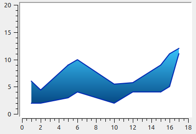
The color stops of gradients in Qt are specified in pixel coordinates. So if you enlarge/shrink the plot window, this leads to funny effects:
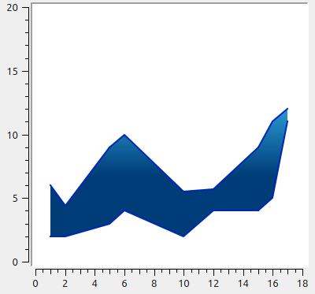

The solution to the problem is to derive the class QwtPlotIntervalCurve and implement the drawing function yourself.
class OwnPlotIntervalCurve : public QwtPlotIntervalCurve {
public:
void draw(QPainter * painter,
const QwtScaleMap & xMap, const QwtScaleMap & yMap,
const QRectF & canvasRect) const override
{
// compute min/max y pixel
QRectF br = boundingRect();
double topPixel = yMap.transform(br.top());
double bottomPixel = yMap.transform(br.bottom());
QLinearGradient grad(0,bottomPixel,0,topPixel);
grad.setColorAt(0, QColor(60,200,255));
grad.setColorAt(1, QColor(0,60,120));
const_cast<OwnPlotIntervalCurve*>(this)->setBrush( QBrush(grad));
// call original drawing function
QwtPlotIntervalCurve::draw(painter, xMap, yMap, canvasRect);
}
};Now, when zooming, panning or adjusting the window size, the gradient stays in place.
6.1. Stacked (interval) curves/area diagrams
You can also use interval curves to create stacked, filled curves or area diagrams. For this you simply create several QwtPlotIntervalCurve drawing elements, which each share the same X values but have different Y values.
QVector<double> x{1,2,5,6,10,12,15,16,17};
QVector<QVector<double> > y;
y.append( QVector<double>{0, 0, 0, 0, 0, 0, 0, 0, 0} );
y.append( QVector<double>{2, 2, 3, 4, 2, 4, 4, 5, 11} );
y.append( QVector<double>{6,4.4, 9, 8,5.5,5.7, 9, 11, 12} );
y.append( QVector<double>{7,6.6,12,10, 9, 11,12, 12, 13} );
const QColor cols[] = { QColor(96,60,20),
QColor(156,39,6),
QColor(212,91,18),
QColor(242,188,43)
};
for (int j=0;j<y.count()-1; ++j) {
QwtPlotIntervalCurve *curve = new QwtPlotIntervalCurve();
QVector<QwtIntervalSample> intervalSamples;
for (int i=0; i<x.count(); ++i)
intervalSamples.append(QwtIntervalSample(x[i],y[j][i],y[j+1][i]));
curve->setStyle(QwtPlotIntervalCurve::Tube);
curve->setPen(cols[j+1].darker(150), 2);
curve->setBrush(cols[j+1]);
curve->setZ(y.count()-j);
curve->setRenderHint( QwtPlotItem::RenderAntialiased, true ); // use antialiasing
curve->setSamples(intervalSamples);
curve->attach(&plot); // Plot takes ownership
}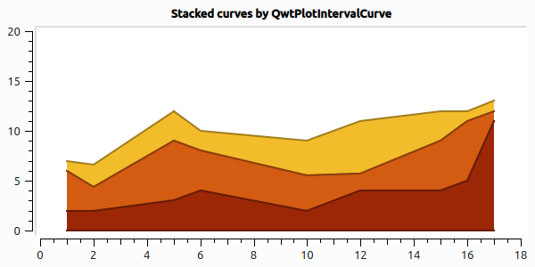
|
Stacked curves can also be created in the classic way with filled line curves (see Chapter 5.4) that are drawn on top of each other. For this, the lines must be given a brush and be drawn from back to front. With |
// variable declarations and initialization as above
for (int j=y.count()-1;j>0; --j) {
QwtPlotCurve *curve = new QwtPlotCurve();
curve->setPen(cols[j].darker(150), 2);
curve->setRenderHint( QwtPlotItem::RenderAntialiased, true ); // use antialiasing
curve->setSamples(x, y[j]);
curve->setBrush(cols[j]);
curve->setZ(y.count()-j); // set drawing order via z value
curve->attach(&plot);
}The result is almost the same as above:

6.2. Computing stacked curves from data series
Stacked curves arise from stacking normal data series. These do not necessarily have to use the same X values per data series and can have positive and negative numbers. To stack and display such data correctly, some preparation work is necessary.
Let’s start with three simple data series, which, plotted directly, look like this:
// original data
QVector<double> x_initial{1, 2, 5, 6, 10};
QVector<QVector<double> > y;
y.append( QVector<double>{2, 1, -3, 4, 2} ); // red
y.append( QVector<double>{6, 5, 3, 4, -5} ); // green
y.append( QVector<double>{5, -6, -3, -2, 1} ); // blue
QVector<QColor> cols = {
QColor(0xb00000), // #a00000
QColor(0x20b000), // #208000
QColor(0x2000b0) // #200080
};
6.2.1. Determining zero crossings
First you have to determine the zero crossings of the curves and insert new support points with y=0 at these positions. The function addZeroCrossings() does this:
... // as before
// each data series needs its own X vector
QVector<QVector<double> > x(y.count());
for (int i=0; i<y.count(); ++i) {
x[i] = x_initial;
addZeroCrossings(x[i], y[i]); // x and y vectors are modified
}
...void addZeroCrossings(QVector<double> & x, QVector<double> & y) {
const int n = y.size();
if (n == 0)
return; // skip empty curves
QVector<double> newX, newY;
newX.reserve(x.size());
newY.reserve(x.size());
// iterate over all original points and the intervals between them
for (int i = 0; i < n; ++i) {
// keep original points
newX.append(x[i]);
newY.append(y[i]);
// check the following interval for a zero crossing
if (i + 1 < n) {
double y0 = y[i], y1 = y[i + 1];
if ((y0 > 0.0 && y1 < 0.0) || (y0 < 0.0 && y1 > 0.0)) {
double denom = y0 - y1; // never becomes 0
// interpolate X value: 0 = x_0 + (y1-y0)/(x1-x0)*x_0
newX.append(x[i] + (y0 / denom) * (x[i + 1] - x[i]));
newY.append(0);
}
}
}
x.swap(newX);
y.swap(newY);
}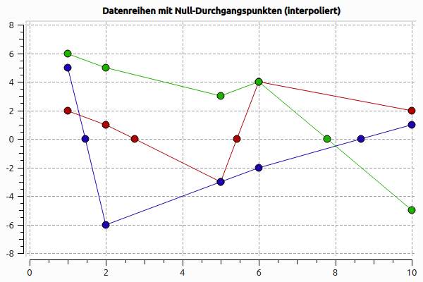
6.2.2. Computing uniform support points
In order to be able to add the data values, the support points must match. So a uniform X value grid is determined and the respective missing values are interpolated.
... // as before
QVector<double> unifiedX;
mergeCoordinates(x, y, unifiedX); // unifiedX is generated and y vectors adjusted
...void mergeCoordinates(
const QVector<QVector<double> > & x,
QVector<QVector<double> > & y,
QVector<double> & unifiedX)
{
// transfer all coordinates from all vectors into a uniform vector
unifiedX.reserve(x.size()*x.front().size());
int seriesCount = x.count();
for (int k=0; k<x.count(); ++k)
for (double val : x[k])
unifiedX.append(val);
// now sort and remove duplicates
std::sort(unifiedX.begin(), unifiedX.end());
unifiedX.erase(std::unique(unifiedX.begin(), unifiedX.end()), unifiedX.end());
// Now iterate over all x values of all series and interpolate y values for
// missing support points.
// Since afterwards all data series have the same support points,
// we only need to update the y values.
for (int k=0; k<seriesCount; ++k) {
if (x[k].count() == 0) {
// curve is empty, fill with 0 values
y[k] = QVector<double>(unifiedX.count(), 0.0);
continue;
}
const QVector<double> & xk = x[k]; // readability simplification
QVector<double> & yk = y[k]; // readability simplification
QVector<double> newY; // vector for new y values
newY.reserve(unifiedX.size());
double xLast = xk.back();
int i_unified = 0; // index counter for unifiedX values
int i = 0; // index counter for x values of the current series
int n_unified = unifiedX.count();
int n = xk.count();
// the x vectors (unifiedX and xk) are both strictly monotonically increasing
while (i_unified < n_unified && i < n) {
// case distinctions
// unifiedX[i_unified] < x[0] -> insert x[i_unified] and y=0 (fill)
// unifiedX[i_unified] < xLast -> insert x[i_unified] and y=0 (fill)
double xUni = unifiedX[i_unified];
if (xUni < xk[0] || xUni > xLast) {
newY.append(0);
++i_unified;
continue;
}
// case 1: x values match (same support point)
if (xk[i] == xUni) {
newY.append(yk[i]);
++i;
++i_unified;
continue;
}
// case 2: x value missing in the interval: interpolation necessary
double y1 = yk[i];
double y0 = yk[i-1];
double dx = xk[i] - xk[i-1];
// y = (x - x0)/(x1-x0)(y1-y0) + y0
double yinterpol = (xUni - xk[i-1])/dx*(y1-y0) + y0;
newY.append(yinterpol);
++i_unified; // only increment the counter for the common X vector
}
yk.swap(newY);
}
}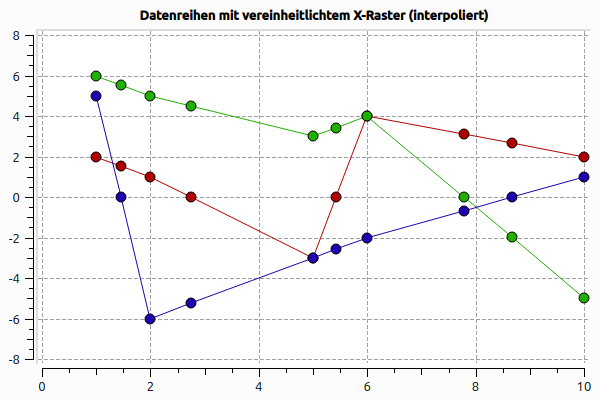
Now you can add the data series. The positive and the negative parts are added separately, and you get, in effect, two stacked line series that are, however, drawn into the same diagram at the same time.
... // as before
// add data series
QVector<QVector<double> > yPos;
QVector<QVector<double> > yNeg;
computeStackedLinesWithNegative(y, yPos, yNeg);
// insert color for the lowest interval boundary
cols.prepend(Qt::black);
// add lower interval boundary
QVector<double> nullVector(unifiedX.count(), 0.0);
yPos.prepend(nullVector);
yNeg.prepend(nullVector);
// add the positive parts as QwtPlotIntervalCurve
addIntervalCurve(plot, unifiedX, yPos, cols);
// and the negative parts
addIntervalCurve(plot, unifiedX, yNeg, cols);void computeStackedLinesWithNegative(
const QVector<QVector<double> > & y,
QVector<QVector<double> > & yPos,
QVector<QVector<double> > & yNeg)
{
// y[0..n-1] are the raw data of the data series.
int numSeries = y.count();
int numPoints = y[0].count();
QVector<double> posAccum(numPoints, 0.0);
QVector<double> negAccum(numPoints, 0.0);
QVector<QVector<double> > result;
for (int j = 0; j < numSeries; ++j) {
QVector<double> lower(numPoints), upper(numPoints);
for (int i = 0; i < numPoints; ++i) {
double v = y[j][i];
// accumulate positive values in posAccum, negative in negAccum
if (v >= 0.0)
posAccum[i] += v;
else
negAccum[i] += v;
upper[i] = posAccum[i];
lower[i] = negAccum[i];
}
yNeg.append(lower);
yPos.append(upper);
}
}
// helper function for adding an interval curve
void addIntervalCurve(QwtPlot * plot,
const QVector<double> & x,
const QVector<QVector<double> > & y,
const QVector<QColor> & cols)
{
int numSeries = y.count()-1;
for (int j = 0; j < numSeries; ++j) {
QwtPlotIntervalCurve *curve = new QwtPlotIntervalCurve();
QVector<QwtIntervalSample> intervalSamples;
for (int i = 0; i < x.count(); ++i)
intervalSamples.append(QwtIntervalSample(x[i], y[j][i], y[j+1][i]));
curve->setStyle(QwtPlotIntervalCurve::Tube);
curve->setPen(cols[j+1].darker(150), 0);
curve->setBrush(cols[j+1].lighter(120));
curve->setZ(numSeries - j);
curve->setRenderHint( QwtPlotItem::RenderAntialiased, true );
curve->setSamples(intervalSamples);
curve->attach(plot);
}
}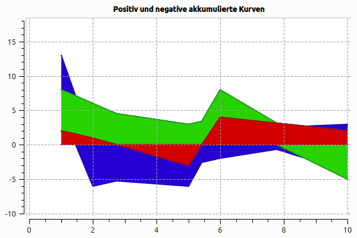
6.2.3. Performance comparison
Further up I already pointed out that instead of QwtIntervalCurve you can also use filled curves. In this case the plot code after computeStackedLinesWithNegative() looks like this:
// add positive curves
for (int j=yPos.count()-1;j>=0; --j) {
QwtPlotCurve *curve = new QwtPlotCurve();
curve->setPen(cols[j].darker(150), 0);
curve->setRenderHint( QwtPlotItem::RenderAntialiased, true ); // use antialiasing
curve->setSamples(unifiedX, yPos[j]);
curve->setBrush(cols[j].lighter(120));
curve->setZ(y.count()-j); // set drawing order via z value
curve->attach(plot);
}
// add negative curves
for (int j=yNeg.count()-1;j>=0; --j) {
QwtPlotCurve *curve = new QwtPlotCurve();
curve->setPen(cols[j].darker(150), 0);
curve->setRenderHint( QwtPlotItem::RenderAntialiased, true ); // use antialiasing
curve->setSamples(unifiedX, yNeg[j]);
curve->setBrush(cols[j].lighter(120));
curve->setZ(y.count()-j); // set drawing order via z value
curve->attach(plot);
}The result looks almost identical, with the difference that with the interval curves a boundary line is also drawn along the lower edge.
Which method is faster now? Here is an example from practice: initially 8760 hourly values; after adding zero crossings and unifying the grid there are just under 10000 data points.


Time for re-rendering the plot after resizing to 1920x1080 resolution:
-
800 ms for the variant with
QwtIntervalCurve -
530 ms for the variant with the filled
QwtPlotCurve
7. Bar Charts

Bar charts are also easily possible with QwtPlot. There are various variants, depending on the data situation:
-
one bar per interval, side by side or stacked
-
several bars per interval, side by side or stacked
As the drawing element/diagram type, either QwtPlotBarChart or QwtPlotMultiBarChart is used. Both classes implement the interface of the abstract base class QwtPlotAbstractBarChart.
7.1. Basic properties of the plots
For simple bar charts you use the QwtPlotBarChart class. As with QwtPlotCurve, the bar chart drawing element is created on the heap and handed to the diagram with attach().
QwtPlotBarChart * curve = new QwtPlotBarChart();
QVector<double> y{10,20,15,14,18,12};
curve->setSamples(y);
curve->attach(&plot); // Plot takes ownershipWithout further customization the diagram still looks rather boring.

|
The function |
7.2. Baseline
By default the bars start at 0. Sometimes, however, you want to show relative differences with respect to a baseline. For this you use setBaseLine(yPlotCoordinate).
QVector<double> y{10,20,15,14,18,12};
curve->setSamples(y);
curve->setBaseline(15);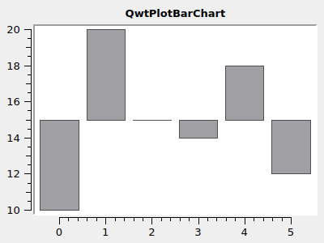
7.3. Layout and spacing
The appearance of the diagram can be customized in many ways. When you enlarge and shrink the diagram, the axes are scaled and the bars along with them.
In the default setting, the bars are drawn with minimal spacing to each other and to the border. You can change the margin with setMargin(pixels) and you define the spacing between the individual bars with setSpacing(pixels).
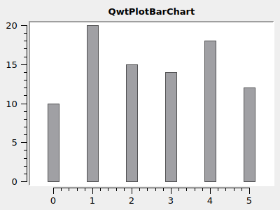
The width of the bars themselves is controlled via layout specifications, concretely via the functions QwtPlotAbstractBarChart::setLayoutPolicy() and QwtPlotAbstractBarChart::setLayoutHint().
7.3.1. AutoAdjustSamples
In this mode, set by
curve->setLayoutPolicy(QwtPlotAbstractBarChart::AutoAdjustSamples);the size of the bars is determined based on the size of the drawing canvas and the configured margin and spacing values.


The bars, the spacing and the margins fill the drawing canvas completely. As you can see in the right diagram, this stays that way even when zooming into the diagram.
The additional parameter setLayoutHint() defines the number of pixels that a bar should be at least wide. This lets you prevent the bars from eventually disappearing completely when the plot size is reduced. The following example shows what happens with a larger LayoutHint in AutoAdjustSamples mode:
curve->setLayoutPolicy(QwtPlotAbstractBarChart::AutoAdjustSamples);
curve->setLayoutHint(100); // minimum width of bars is 100 pixels
7.3.2. ScaleSamplesToAxes
In this layout mode the bar width is set based on the current x axis scaling. If, in this layout mode, you set the LayoutHint to 0.5, then a bar is drawn exactly half as wide as an axis tick and then centered on the axis tick. So the X axis is used to convert the 0.5 in plot coordinates into pixel widths of the drawing canvas.
curve->setLayoutPolicy(QwtPlotAbstractBarChart::ScaleSamplesToAxes);
curve->setLayoutHint(0.5); // 0.5 axis scale as bar width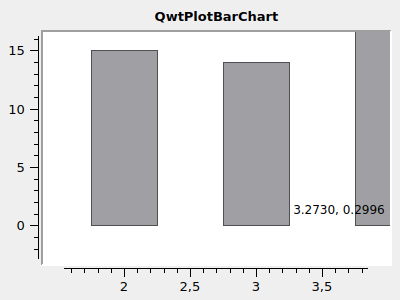
When zooming in, too, the bar width always follows the X axis scaling.
|
The bar spacing here is defined exclusively via the LayoutHint, and the bar spacing that you set with |
7.3.3. ScaleSampleToCanvas
In this mode the bar widths are determined as a function of (as a percentage of) the drawing canvas size. To set the LayoutHint parameter, you should consider how many bars will at most be visible in the diagram.
curve->setLayoutPolicy(QwtPlotAbstractBarChart::ScaleSampleToCanvas);
curve->setLayoutHint(0.1); // bar width 10% of canvas width

When zooming in, the bar width stays constant and changes only when the plot size changes.
7.3.4. Layout recommendation
Apart from special requirements, for most cases the layout policy QwtPlotAbstractBarChart::ScaleSamplesToAxes is recommended. Both when resizing the plot and when zooming, the plot behaves as you would expect.
curve->setLayoutPolicy(QwtPlotAbstractBarChart::ScaleSamplesToAxes);
curve->setLayoutHint(0.8); // 0.8 axis scale as bar width
curve->setMargin(10); // 10 pixel marginIf you really want to have always the same spacing between the bars, no matter how large the plot is or how far you zoom in, then the layout policy QwtPlotAbstractBarChart::AutoAdjustSamples is recommended.
7.4. Bar shapes and colors
The bars themselves are drawn by the QwtColumnSymbol class. This can be configured in various ways. By default the symbol type QwtColumnSymbol::Box is used, as in the following example:
QwtColumnSymbol* symbol = new QwtColumnSymbol( QwtColumnSymbol::Box );
symbol->setLineWidth( 2 );
symbol->setFrameStyle( QwtColumnSymbol::Raised );
symbol->setPalette( QPalette( QColor(0xE35811) ) );
curve->setSymbol( symbol );What can be customized is the shape of the rectangle frame (Raised, Plain, NoFrame), the fill color and the line color.
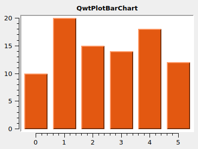
|
If you create a |
By customizing individual palette roles you can customize the drawing of the bars.
QwtColumnSymbol* symbol = new QwtColumnSymbol( QwtColumnSymbol::Box );
symbol->setFrameStyle(QwtColumnSymbol::Plain);
symbol->setLineWidth(1);
QPalette palette(QColor(0xc1e311));
palette.setBrush(QPalette::Dark, Qt::black); // black frame
symbol->setPalette(palette);
curve->setSymbol( symbol );
7.5. Bar labels on the X axis
The X axis shown in the example diagrams so far is a bit unusual for bar charts. Without wanting to preempt Chapter 11, the customization of the x axis that is typical for bar charts shall nevertheless be shown here.
First the axis drawing functionality is customized, for which you first obtain access to the current drawing class QwtScaleDraw (header QwtScaleDraw or qwt_scale_draw.h) with QwtPlot::axisScaleDraw().
Then you switch off the subdivision marks (ticks) and the axis line (backbone).
To better understand the different margin settings of the plot, bars are chosen with ScaleSamplesToAxes and LayoutHint 1 (full width), the bar chart margins (margins) are set to 20 and the canvas margin (all around) is set to 10 pixels.
Finally, we also make sure that the plot layout does not place the y axis directly over the x=0 value at the left edge of the drawing canvas. This is done by customizing the QwtPlotLayout (header QwtPlotLayout or qwt_plot_layout.h). QwtPlotLayout::setAlignCanvasToScale() specifies whether the chosen axis lies directly at the edge of the drawing canvas and thus whether the respectively assigned axis (here the x axis) lies with its 0 value directly at the left edge of the drawing canvas.
QwtScaleDraw* scaleDraw1 = plot.axisScaleDraw( QwtPlot::xBottom );
scaleDraw1->enableComponent( QwtScaleDraw::Backbone, false );
scaleDraw1->enableComponent( QwtScaleDraw::Ticks, false );
curve->setMargin(20); // margin left/right of bars
plot.plotLayout()->setCanvasMargin( 10 ); // canvas margin all around
// do not fix y-axis at 0 and left edge of canvas
plot.plotLayout()->setAlignCanvasToScale( QwtPlot::yLeft, false );
plot.updateCanvasMargins();For comparison, the same diagram again without margins and with setAlignCanvasToScale(yLeft, true).
QwtScaleDraw* scaleDraw1 = plot.axisScaleDraw( QwtPlot::xBottom );
scaleDraw1->enableComponent( QwtScaleDraw::Backbone, false );
scaleDraw1->enableComponent( QwtScaleDraw::Ticks, false );
curve->setMargin(0);
plot.plotLayout()->setCanvasMargin(0);
plot.plotLayout()->setAlignCanvasToScale( QwtPlot::yLeft, true );
plot.updateCanvasMargins();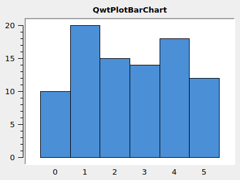
7.6. Bar labeling
If you want labels for the individual bars instead of the numbers at the bottom edge of the screen, you have to derive the QwtScaleDraw class and then override the virtual function QwtScaleDraw::label().
class ScaleDraw : public QwtScaleDraw {
public:
ScaleDraw(const QStringList& labels ) : m_labels( labels ) {
enableComponent( QwtScaleDraw::Ticks, false );
enableComponent( QwtScaleDraw::Backbone, false );
setLabelAlignment( Qt::AlignHCenter | Qt::AlignVCenter );
}
virtual QwtText label( double value ) const QWT_OVERRIDE {
const int index = qRound( value );
if ( index >= 0 && index < m_labels.size() )
return m_labels[index];
return QwtText();
}
QStringList m_labels;
};
...
// create scale draw
QwtScaleDraw * scaleDraw = new ScaleDraw(QStringList()
<< "Dresden" << "Berlin" << "Leipzig" << "Hamburg"
<< "Wolgast" << "Saalfeld");
// set to plot - plot takes ownership
plot.setAxisScaleDraw(QwtPlot::xBottom, scaleDraw);This class implementation configures the display of the subdivision marks and the scale line as before, ensures correct alignment of the labels and remembers the texts passed in the constructor as an indexed list.
The decisive part is the implementation of the function QwtScaleDraw::label(). This function’s task is to display appropriate labels matching the passed numeric values (here x axis values). As mentioned at the beginning of this chapter, each bar is assigned a consecutive number. So when the axis wants to draw a number, e.g. the 4, then in the function the value is rounded and used as an index to return the corresponding text.


The problem with zooming in can be solved with a minimal extension of the code (only draw labels where the rounded x axis scale value corresponds fairly exactly to an integer):
if ( index >= 0 && index < m_labels.size() && qAbs(index-value) < 1e-6 )
return m_labels[index];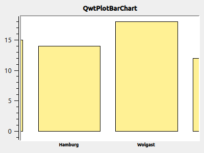
7.7. Multi-color bars
If you now also want to color the bars individually, there is no way around re-implementing the QwtPlotBarChart drawing element. You basically only need to re-implement the function QwtPlotBarChart::specialSymbol() and return differently colored bar symbols here.
class MultiColorBarChart : public QwtPlotBarChart {
public:
MultiColorBarChart() {
setLayoutPolicy(QwtPlotBarChart::ScaleSamplesToAxes);
setLayoutHint(0.8);
// legend shows individual bar titles
setLegendMode( QwtPlotBarChart::LegendBarTitles );
setLegendIconSize( QSize( 10, 14 ) );
}
// we want to have individual colors for each bar
virtual QwtColumnSymbol* specialSymbol(
int sampleIndex, const QPointF&) const QWT_OVERRIDE
{
// generate symbol with color for each bar
QwtColumnSymbol* symbol = new QwtColumnSymbol( QwtColumnSymbol::Box );
symbol->setLineWidth( 2 );
symbol->setFrameStyle( QwtColumnSymbol::Raised );
QColor c( Qt::white );
if ( sampleIndex >= 0 && sampleIndex < m_colors.size() )
c = m_colors[ sampleIndex ];
symbol->setPalette( c );
return symbol;
}
virtual QwtText barTitle( int sampleIndex ) const QWT_OVERRIDE {
if ( sampleIndex >= 0 && sampleIndex < m_titles.size() )
return m_titles[ sampleIndex ];
return QwtText();
}
QStringList m_titles;
QList<QColor> m_colors;
};For each bar in the diagram we store a color in the member variable m_colors. In the overridden function QwtPlotBarChart::specialSymbol() we now create a QwtColumnSymbol as in the previous chapter and return it. The function takes both the index of the bar (or sample) as an argument and the plot coordinates of the bar, where the x value of the point is again the bar index and the y value corresponds to the function value of the bar.
|
The function |
|
If you only want to color certain bars but have the others drawn in the default design, you can also simply have the function |
7.8. Legend entries
For bar charts you can create two kinds of legend entries:
-
one entry for the entire bar chart drawing element, or
-
individual entries for each single bar
The first variant makes sense if further drawing elements with legend entries are shown alongside the bar chart drawing element. In the present case, an individual labeling of the bars makes sense.
For this, the virtual function QwtPlotBarChart::barTitle() has to be re-implemented (the default implementation always returns an empty title text). In addition, the legend type has to be switched to "individual bars" by calling the function QwtPlotBarChart::setLegendMode( QwtPlotBarChart::LegendBarTitles ). Additionally, you can adjust the size of the legend symbols with QwtPlotBarChart::setLegendIconSize():
class MultiColorBarChart : public QwtPlotBarChart {
public:
MultiColorBarChart() {
setLayoutPolicy(QwtPlotBarChart::ScaleSamplesToAxes);
setLayoutHint(0.8);
// legend shows individual bar titles
setLegendMode( QwtPlotBarChart::LegendBarTitles );
setLegendIconSize( QSize( 10, 14 ) );
}
// individual colors for the individual bars
virtual QwtColumnSymbol* specialSymbol(
int sampleIndex, const QPointF&) const QWT_OVERRIDE
{
// ... as before
}
virtual QwtText barTitle( int sampleIndex ) const QWT_OVERRIDE {
if ( sampleIndex >= 0 && sampleIndex < m_titles.size() )
return m_titles[ sampleIndex ];
return QwtText();
}
QStringList m_titles;
QList<QColor> m_colors;
};In addition to the colors, the titles of the bars are now held in the member variable m_titles and returned in every call of barTitle().
For the legend to be drawn at all, you have to show it for the plot:
// show legend
QwtLegend * legend = new QwtLegend();
QFont legendFont;
legendFont.setPointSize(7);
legend->setFont(legendFont);
plot.insertLegend(legend, QwtPlot::RightLegend); // plot takes ownership
// hide x axis
plot.setAxisVisible(QwtPlot::xBottom, false);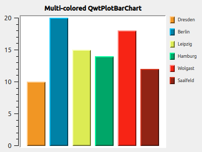
7.8.1. Bar charts with gaps between the bars or irregular spacing
The position of the bars, i.e. the X coordinates, is set automatically in the function setSamples() (0,1,2,3, …). The bars are then drawn centered around this coordinate (see also the examples at the very top).
If you want to draw the bars at different spacings or with gaps between the bars, you can use the overloaded function setSamples( QwtSeriesData< QPointF >* ):
QwtArraySeriesData<QPointF> * series = new QwtArraySeriesData<QPointF>();
series->setSamples({ QPointF(1,5), QPointF(3,10), QPointF(4,4) } );
curve->setSamples(series); // plot takes ownership of series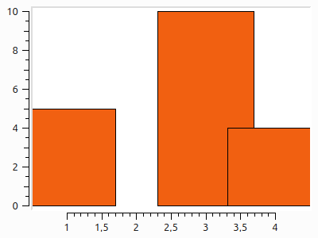
The width of the bars is by default determined with QwtPlotAbstractBarChart::AutoAdjustSamples, which leads to the overlapping bars shown above. It is better to set the computation mode to
curve->setLayoutPolicy(QwtPlotBarChart::ScaleSamplesToAxes);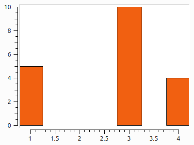
7.8.2. Several bar charts in the same diagram
If you integrate several QwtPlotBarChart objects into one diagram, QwtPlot draws them independently of each other. This lets you, for example, draw positive and negative bars at the same X coordinates, or overlapping bars.
For this you simply create and configure several QwtPlotBarChart objects:
QwtPlotBarChart * curve = new QwtPlotBarChart;
curve->setSamples(y);
curve->attach(&plot);
...
QwtPlotBarChart * curve2 = new QwtPlotBarChart;
curve2->setSamples(y2);
curve2->attach(&plot);The plots are by default drawn in the order in which they were added to the plot. But you can also change this by setting the z order (see also Chapter 4.1.2).
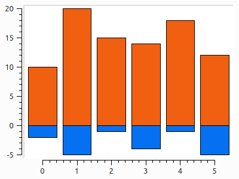
7.9. Stacked bar charts or bar charts with several bars per group
So far there was exactly one bar per X coordinate, or one positive and one negative bar if you used two QwtPlotBarChart objects. However, you can also draw groups of bars, and thereby represent 3D information.
For this you use the drawing element QwtPlotMultiBarChart. This shares a number of properties with the previously discussed QwtPlotBarChart. But instead of drawing one bar centered around an X coordinate, this drawing element can draw several bars, namely:
-
side by side
-
stacked on top of each other (only exclusively positive or exclusively negative values)
The data is provided in a 3D data structure, as in the following example (city, year, count):
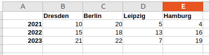
QwtPlotMultiBarChart diagramThe associated diagram is configured as follows:
// data: 4 cities (groups), 3 bars each (years 2021, 2022, 2023)
// Each entry in samples corresponds to a group (x position),
// each value in it to a bar of the group.
QVector<QVector<double>> samples;
samples << (QVector<double>() << 10 << 15 << 12); // Dresden
samples << (QVector<double>() << 20 << 18 << 22); // Berlin
samples << (QVector<double>() << 5 << 13 << 7); // Leipzig
samples << (QVector<double>() << 4 << 16 << 19); // Hamburg
// create QwtPlotMultiBarChart
QwtPlotMultiBarChart *barChart = new QwtPlotMultiBarChart;
// choose grouped display
barChart->setStyle(QwtPlotMultiBarChart::Grouped);
// set data
barChart->setSamples(samples);
// colors and symbols for each bar (index = year series)
const QColor colors[] = {
QColor(0x5b9bd5), // blue — 2021
QColor(0x70ad47), // green — 2022
QColor(0xed7d31) // orange — 2023
};
for (int i = 0; i < 3; ++i) {
QwtColumnSymbol *sym = new QwtColumnSymbol(QwtColumnSymbol::Box);
sym->setFrameStyle(QwtColumnSymbol::Plain);
sym->setLineWidth(1);
QPalette pal(colors[i].lighter(130));
pal.setBrush(QPalette::Dark, colors[i].darker(140));
sym->setPalette(pal);
barChart->setSymbol(i, sym);
}
// legend title for each bar series
QList<QwtText> titles;
titles << QwtText("2021") << QwtText("2022") << QwtText("2023");
barChart->setBarTitles(titles);
barChart->setLegendIconSize(QSize(10, 14));
barChart->attach(&plot);
// legend
QwtLegend *legend = new QwtLegend();
QFont legendFont;
legendFont.setPointSize(8);
legend->setFont(legendFont);
plot.insertLegend(legend, QwtPlot::RightLegend);
// label the x axis with city names
QwtScaleDraw *scaleDraw = new ScaleDraw(
QStringList() << "Dresden" << "Berlin" << "Leipzig" << "Hamburg");
QFont axisFont;
axisFont.setPointSize(8);
axisFont.setBold(true);
plot.setAxisFont(QwtPlot::xBottom, axisFont);
plot.setAxisScaleDraw(QwtPlot::xBottom, scaleDraw);
plot.setAxisScale(QwtPlot::xBottom, -0.5, 3.5);
barChart->setMargin(10);
plot.plotLayout()->setCanvasMargin(0);
plot.plotLayout()->setAlignCanvasToScale(QwtPlot::yLeft, false);
plot.updateCanvasMargins();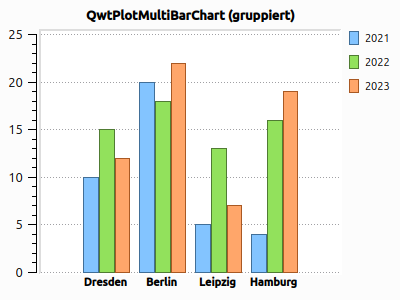
QwtPlotMultiBarChart diagram with grouped barsAlternatively, you can also switch to stacked diagram data:
barChart->setStyle(QwtPlotMultiBarChart::Stacked);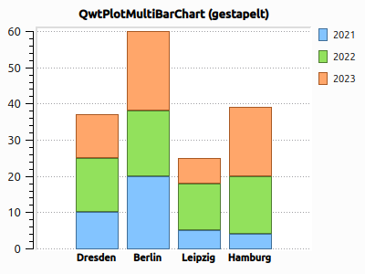
QwtPlotMultiBarChart diagram with stacked bars7.9.1. Different frames for the stacked curves
With the stacked curves, the symbol frame QwtColumnSymbol::Plain leads to double separator lines between the bars (see image above).
You can, of course, also change the style:
sym->setFrameStyle(QwtColumnSymbol::NoFrame);
// or
sym->setFrameStyle(QwtColumnSymbol::Raised);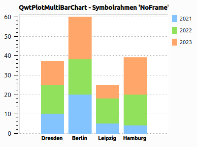
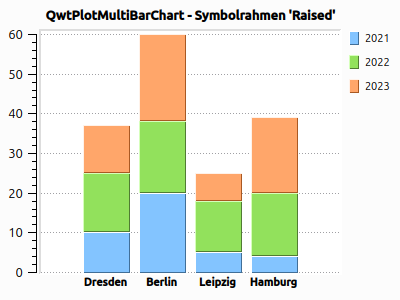
8. Spectrogram and Color Gradient Diagrams

In the Qwt library, spectrogram is the term for color gradient diagrams, where the pixel color depends on the numeric value. These are visualizations of 3D data, i.e. x, y, z tuples. x and y are used for the X and Y axis, while the z value at the respective coordinate is converted into a color value via a color table.
Fundamentally, you need three components to display such a diagram:
-
Conversion of image coordinates to plot coordinates x,y. This conversion is realized by the axis scales (
QwtScaleEngine). -
Computation of the z value for these x,y plot coordinates. This functionality must be contributed by the user.
-
Computation of a color value matching the z value. This can be done using ready-made color tables (
QwtColorMap, orQwtAlphaColorMaporQwtLinearColorMap), or by a user-defined conversion.
8.1. Fundamentals of the Spectrogram plot element
The actual drawing is handled by the QwtPlotSpectrogram plot element. It is configured as follows:
QwtPlotSpectrogram * spectro = new QwtPlotSpectrogram("Some spectrogram");
spectro->setRenderThreadCount( 0 ); // use parallelization depending on the system
spectro->setCachePolicy( QwtPlotRasterItem::PaintCache ); // only re-render the image when necessary
spectro->attach(&plot);
// set data storage object; it returns a z value for every image pixel.
spectro->setData( new SpectrogramData() );The actual data is set via setData(), where the class SpectrogramData is a class written by ourselves that derives from QwtRasterData:
class SpectrogramData : public QwtRasterData {
public:
SpectrogramData() {
// small optimization; saves extra effort when checking for gaps
setAttribute(QwtRasterData::WithoutGaps, true);
// define value ranges
m_intervals[Qt::XAxis] = QwtInterval(-1.5, 3);
m_intervals[Qt::YAxis] = QwtInterval(-1.5, 1.5);
m_intervals[Qt::ZAxis] = QwtInterval(0.0, 8.0);
}
// This function returns the value ranges and must be implemented
virtual QwtInterval interval(Qt::Axis axis) const override {
if (axis >= 0 && axis <= 2)
return m_intervals[axis];
return QwtInterval();
}
// This is the actual computation function which, for an x,y plot coordinate, returns
// the corresponding z value.
virtual double value(double x, double y) const override {
double z = (x - 1) * (x - 1) + (y - 2) * (y - 1);
return z;
}
private:
QwtInterval m_intervals[3];
};This then yields a spectrogram that is colored using the default color table:

The color value results from the value returned by the value() function. Using the z value range returned by QwtRasterData::interval(Qt::ZAxis), this value is normalized (0 = min z value, 1 = max z value). Using this normalized value, the matching color is then chosen from the color table.
8.1.1. Speed optimizations
The spectrogram computes each individual image pixel of the diagram individually, calling the function QwtRasterData::value() in the process. The evaluation of this function should be completely independent of the order of the computed pixels, if only because it is a const function. It can therefore be parallelized perfectly.
The QwtPlotSpectrogram class contains a parallelized computation function and by default uses all available CPUs/threads. The number of threads to use is specified via QwtPlotSpectrogram::setRenderThreadCount(numThreads), where a value of 0 sets the default number of threads.
|
When debugging the |
Regardless of the parallel evaluation of the function, updating the image takes quite some time, especially at high resolutions. In order not to recompute the spectrogram every time the diagram is displayed (without size or data changes), you can cache the generated pixmap. This is switched on via QwtPlotSpectrogram::setCachePolicy( QwtPlotRasterItem::PaintCache ). As soon as you change the data, i.e. call QwtPlotSpectrogram::setData(), or change any other settings of the plot, the cached image is recomputed.
|
If you change the data stored internally in the spectrogram such that evaluating the |
8.1.2. Spectrograms/color gradient diagrams with holes
Fundamentally, a spectrogram can also have holes. This is achieved by returning a NAN value as the z value for the relevant plot coordinates:
// adjusted value() function that contains a gap in the range 0 < x < 0.5, 0 < y < 0.5
virtual double value(double x, double y) const override {
if ((x > 0.) && (x < 0.5) && (y > 0.) && (y < 0.5))
return qQNaN(); // NAN z values are not drawn
double z = (x - 1) * (x - 1) + (y - 2) * (y - 1);
return z;
}In addition, you have to give the raster data the information that gaps are to be taken into account:
SpectrogramData() {
// take gaps into account - this is the default setting and would therefore
// not need to be set explicitly
setAttribute(QwtRasterData::WithoutGaps, false);
...
}|
For spectrograms without gaps, setting the attribute |
8.2. Customizing color gradients
Essential to the appearance of the spectrogram is the assignment of colors to numeric values. This is realized by the Qwt helper class QwtColorMap (see the detailed description in section [sec:QwtColorMap]).
The simplest option is to use the special implementation QwtLinearColorMap, which is configured, for example, as follows:
LinearColorMap * cm = new LinearColorMap( QwtColorMap::RGB );
cm->setColorInterval(QColor(0x000080), QColor(0x800000));
cm->addColorStop(0.2, QColor(0x0080ff));
cm->addColorStop(0.5, QColor(0x00ff00));
cm->addColorStop(0.7, QColor(0xffff00));
// replace colormap in the spectrogram
spectro->setColorMap( cm ); // takes ownershipThe many options for customizing color table creation are described in section [sec:QwtColorMap].
8.3. Spectrograms based on data tables
In the initial example, the z value was computed based on x and y plot coordinates. A much more common use case is the visualization of measurement data. Below is an example showing how to implement this sensibly.
class SpectrogramDataTable : public QwtRasterData {
public:
// support points x grid (number of cells/elements along x axis + 1)
std::vector<double> m_xvalues;
// support points y grid (number of cells/elements along y axis + 1)
std::vector<double> m_yvalues;
// values in the cells, m_zvalues[yIndex][xIndex]
std::vector<std::vector<double> > m_zvalues;
void updateIntervals() {
double minVal = std::numeric_limits<double>::max();
double maxVal = -std::numeric_limits<double>::max();
for (unsigned int j=0; j<m_zvalues.size(); ++j)
for (unsigned int i=0; i<m_zvalues[j].size(); ++i) {
double v = m_zvalues[j][i];
minVal = std::min(minVal, v);
maxVal = std::max(maxVal, v);
}
m_intervals[0].setInterval(m_xvalues.front(), m_xvalues.back());
m_intervals[1].setInterval(m_yvalues.front(), m_yvalues.back());
m_intervals[2].setInterval(minVal, maxVal);
}
// This function returns the value ranges and must be implemented
virtual QwtInterval interval(Qt::Axis axis) const override {
if (axis >= 0 && axis <= 2)
return m_intervals[axis];
return QwtInterval();
}
// This function looks up the cell matching the x,y coordinates and returns the value
virtual double value(double x, double y) const override {
// outside the value range?
if ((x < m_xvalues.front()) || (y < m_yvalues.front()) ||
(x > m_xvalues.back()) || (y > m_yvalues.back()))
{
return qQNaN();
}
// find index via std::lower_bound()
std::vector<double>::const_iterator it = std::lower_bound(m_xvalues.begin(), m_xvalues.end(), x);
unsigned int xIdx = it - m_xvalues.begin();
it = std::lower_bound(m_yvalues.begin(), m_yvalues.end(), y);
unsigned int yIdx = it - m_yvalues.begin();
// special handling:
// x = xMin -> xIdx == 0
// x > xMin -> xIdx == xIdx - 1 (since in the first interval)
// x == xMax -> xIdx == xIdx - 1 (since in the last interval)
if (xIdx > 0)
--xIdx;
if (yIdx > 0)
--yIdx;
Q_ASSERT(xIdx < m_xvalues.size()-1);
Q_ASSERT(yIdx < m_yvalues.size()-1);
return m_zvalues[yIdx][xIdx];
}
private:
QwtInterval m_intervals[3];
};The spectrogram can then be configured as follows:
// instantiate data storage object/raster data object
SpectrogramDataTable * data = new SpectrogramDataTable();
// 4 x 5 cells/elements
data->m_xvalues = {0,1,2,5,6};
data->m_yvalues = {0,0.1,0.2,0.3,0.4,0.5};
data->m_zvalues.push_back( { 1, 2, 3, 4} );
data->m_zvalues.push_back( { 1, 2.2, 3.5, 4} );
data->m_zvalues.push_back( { 1.4, 2.4, 3.7, 4.6} );
data->m_zvalues.push_back( { 1.5, 2.5, 3.9, 5.1} );
data->m_zvalues.push_back( { 1.5, 2.6, 4.2, 5.2} );
data->updateIntervals();
spectro->setData( data ); // takes ownershipThe vectors with the support points/grid lines each have one more element, since for 4 elements there are 5 grid lines/element boundary coordinates.
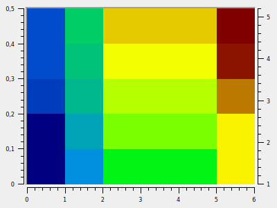
9. Legend
9.1. External legend
…
9.2. Legend drawing element
…
9.3. Custom legend icons
Sometimes, however, you want to display entirely custom icons. You can do this by deriving one of the child classes of QwtPlotItem and overriding the virtual function QwtPlotItem::legendIcon(). In it you can then paint/generate an image to your heart’s content and return it as a QwtGraphic.
The QwtGraphic object is used like an ordinary paint device, i.e. you create a QPainter with it and start drawing.
The following example shows such an implementation, using a QwtPlotCurve as an example:
class OwnPlotCurve : public QwtPlotCurve {
public:
QwtGraphic legendIcon(int, const QSizeF & ) const override {
QwtGraphic graphic;
QSizeF s(30,16); // fix the icon size
graphic.setDefaultSize( s );
graphic.setRenderHint( QwtGraphic::RenderPensUnscaled, true );
QPainter painter( &graphic );
painter.setRenderHint( QPainter::Antialiasing, false);
// center line within the icon rectangle
const double y = 0.5 * s.height();
// draw background (for the black border)
QPen backgroundPen(Qt::black);
backgroundPen.setWidth(5);
backgroundPen.setCapStyle( Qt::FlatCap );
painter.setPen( backgroundPen );
QwtPainter::drawLine( &painter, 0.0, y, s.width(), y );
// draw line color
QPen pn = pen();
pn.setCapStyle( Qt::FlatCap );
pn.setWidth(3);
painter.setPen( pn );
QwtPainter::drawLine( &painter, 1, y, s.width()-1, y );
return graphic;
}
};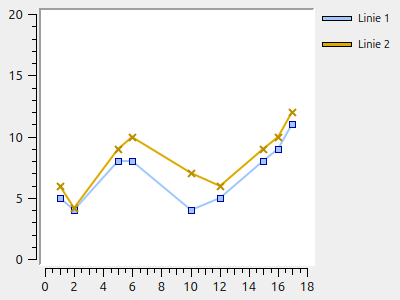
If you prefer the standard rectangles instead, then the following drawing code is sufficient:
// ...
QRect r(0, 0, s.width(), s.height() );
painter.setPen(Qt::black);
painter.setBrush(pen().color());
painter.drawRect(r);
return graphic;which then also looks quite neat:
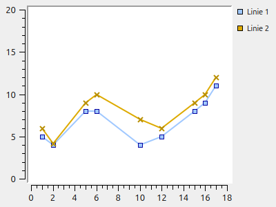
|
When drawing your own icons, you can also fix the size of the icon as in the example above. That way you have complete control over the appearance and can also factor in DPI scaling (for high-res screens). |
10. Marker Lines
11. Plot Axes
The axes/scales of a plot (4 in total: top, bottom, left and right) can already be customized and modified in many ways in the class implementations that ship with Qwt. And of course the classes involved can also be derived and thus modified/changed as desired.
The most important classes with respect to the axes are:
-
QwtAxis -
QwtAbstractScaleDrawand the specializationsQwtScaleDrawandQwtDateScaleDraw -
QwtScaleEngineand the specializationsQwtLinearScaleEngineandQwtLogScaleEngine
11.1. General axis formatting
11.2. Scales
11.2.1. Fonts
Different fonts are used for drawing the scale labels (numbers) and the title.
The font for the scales must be set individually for each visible scale, with
// via QwtScaleWidget::setFont()
plot->axisWidget(QwtPlot::xBottom)->setFont(f);
// or via QwtPlot::setAxisFont(), which ultimately calls the function above
plot->setAxisFont(QwtPlot::xBottom, f);For the title of an axis it is a bit more complicated, since there are several ways to set the text.
On the one hand you can create a QwtText object, configure it individually and then hand it to the QwtScaleWidget:
QwtText title("Intensity");
QFont f;
f.setPointSize(8);
f.setBold(true);
title.setFont(f);
// via QwtScaleWidget::setTitle()
plot->axisWidget( QwtAxis::YLeft )->setTitle( title );
// or via QwtPlot::setAxisTitle()
plot->setAxisTitle( QwtAxis::YLeft, title );That, however, is often quite a lot of typing and you have to set the font consistently everywhere. But since you usually want the axis title in bold anyway, there is hardly any way around it.
You can also simply set the axis text directly:
// directly as a QString argument to setAxisTitle(const QString &)
plot->setAxisTitle( QwtAxis::YLeft, "Intensity" );
// or explicitly converted into a QwtText in setAxisTitle(const QwtText &)
plot->setAxisTitle( QwtAxis::YLeft, QwtText("Intensity") );|
But be careful: these very similar-looking calls do not produce the same result. In the first case, a In the 2nd variant, a brand-new |
12. QwtText and Special Formatting
12.1. MathML
13. Interactive Zooming and Panning of Plot Sections
14. Customization/Styling of the Qwt Components
14.1. General notes on color palettes
The Qwt components use the Qt palette and its color roles for coloring.
14.2. Frame and drawing canvas of the diagram
Various elements of QwtPlot can be customized. Below you can see a QwtPlot embedded in an outer widget (dark gray). The light gray area is the actual QwtPlot:

The most important attributes are marked in the screenshot:
-
Inner margin (see
QWidget::setContentsMargins()) -
Frame (mainly important for printing)
-
Background of the plot widget
-
Drawing canvas (canvas) (concerns background color and frame)
14.2.1. Color and frame of the plot
The color of the outer area of the plot is controlled via the palette property of QwtPlot. By default, the outer border of the plot widget is drawn transparent, i.e. the color of the widget underneath is visible. To set a custom color, you therefore have to call ```setAutoFillBackground(true)```:
QPalette pal = plot.palette();
// The QPalette::Window color role defines the coloring
// of the outer plot area
pal.setColor(QPalette::Window, QColor(196,196,220));
plot->setPalette(pal);
// the "autoFillBackground" property must be switched on for this
plot->setAutoFillBackground(true);
Note: In the section [Gradient as plot background](customization/#gradient-als-plot-hintergrund) it is described how to implement a color gradient in the plot background and adjust it accordingly on resize.
The frame is customized as for a normal widget:
plot->setFrameStyle(QFrame::Box | QFrame::Sunken);Normally such a frame is not necessary for on-screen display or for embedding the QwtPlot into a program interface. However, the frame is often useful for [exporting/printing](export) the widget.
14.2.2. Drawing canvas
The drawing canvas can be colored:
plot->setCanvasBackground(Qt::darkGray);
The margin between the axis labels/title and the border can be defined:
plot->setContentsMargins(15,10,35,5);
The frame around the drawing canvas can be changed by customizing the canvas object (QwtPlotCanvas). QwtPlotCanvas is derived from QFrame, so it can be customized accordingly. You simply create a new object, configure it and hand it to the plot (QwtPlot becomes the new owner of the canvas object):
QwtPlotCanvas * canvas = new QwtPlotCanvas(&plot);
canvas->setPalette(Qt::white);
canvas->setFrameStyle(QFrame::Box | QFrame::Plain );
canvas->setLineWidth(1);
plot->setCanvas(canvas);
It is easier to do this by setting the style sheet for the canvas widget (see the Qt Widgets documentation for which attributes are supported):
plot->canvas()->setStyleSheet(
"border: 1px solid Black;"
"border-radius: 15px;"
"background-color: qlineargradient( x1: 0, y1: 0, x2: 0, y2: 1,"
"stop: 0 LemonChiffon, stop: 1 PaleGoldenrod );"
);
15. Exporting and Printing
Besides displaying on screen, saving nice-looking diagrams and using them in reports is a not unimportant task. However, it is not trivial to export good diagrams with sensible font sizes. Fundamentally, a distinction has to be made here between pixel graphics export and vector graphics.
15.1. Exporting the plot as pixel graphics
The most obvious export of the plot is a 1-to-1 copy to the clipboard or to a bitmap file (jpg, gif, png, …).
15.1.1. Creating a 1-to-1 copy of the plot widget
Every QWidget can be drawn directly into a QPixmap. And this can then be saved to a file.
// render plot into pixmap
QPixmap p = plot.grab();
// save pixmap to file
p.save("diagramm_screenshot.png");The diagram from Tutorial 1 (Chapter 2), exported as a PNG image, looks like this:
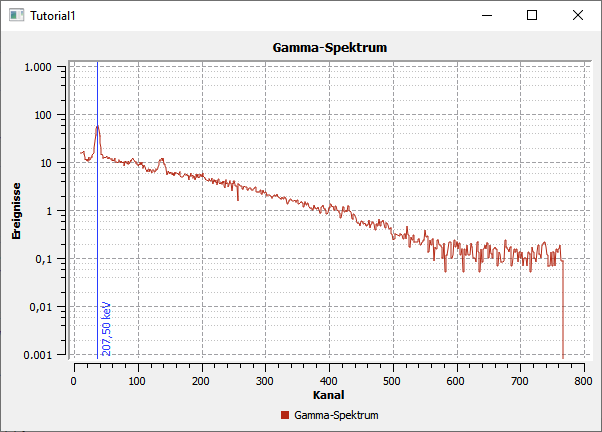
|
The function |
|
The widget title was included in the export with |
15.1.2. Copy to the clipboard
Instead of saving the pixmap to a file, you can also simply copy it to the clipboard. For this, include QClipboard and QApplication and:
// render plot into pixmap
QPixmap p = plot.grab();
// copy pixmap to clipboard
qApp->clipboard()->setImage(p.toImage());15.1.3. Saving QwtPlot with a different resolution
If the QwtPlot is to be saved with a different resolution/pixel size than displayed on screen, you use the QwtPlotRenderer:
// create render object
QwtPlotRenderer renderer;
// specify target size
QRect imageRect( 0.0, 0.0, 1200, 600 );
// create image object of the corresponding size...
QImage image( imageRect.size(), QImage::Format_ARGB32 );
// and fill with white background
image.fill(Qt::white);
// draw the diagram into the QImage
QPainter painter( &image );
renderer.render( &plot, &painter, imageRect );
painter.end();
// convert QImage back into a pixmap
QPixmap plotPixmap( QPixmap::fromImage(image) );
plotPixmap.save("diagram.png");The diagram from Tutorial 1 (Chapter 2) then looks, for example, like this:

|
When you compare this diagram with the previous one of the 1-to-1 copy, you notice that font sizes, line widths and some margins (e.g. at the vertical marker) have stayed the same. The axis scaling, however, and thus the grid and axis labels, has changed due to the higher resolution. You can take advantage of this if, for example, axis labels do not fully fit into the diagram on screen and can now be written thanks to the higher resolution. However, this also carries the danger that the font sizes in the printout become too small. That is more of a problem with vector export, though, and is addressed in Chapter 15.1.9. |
15.1.4. Printing
When printing, the image is simply rendered onto a printer drawing surface. For print support, the pro file first has to be extended in the Qt program:
QT += printsupportYou create and configure a printer object:
QPrinter printer( QPrinter::HighResolution );
printer.setCreator("Me"); // only for exporting to (PDF) files
printer.setDocName("My plot"); // only for exporting to (PDF) files
printer.setPageOrientation( QPageLayout::Landscape );Then the user can also select the printer:
QPrintDialog dialog( &printer );
if ( dialog.exec() ) {
QwtPlotRenderer renderer;
renderer.renderTo( &plot, printer );
}And the image is pushed to the printer or PDF printer.
|
The printer properties creator and docName are stored as properties in the PDF file for PDF printers. For normal printers they are not necessary. |
Important with printers is the resolution to be used. This is set in the constructor of the QPrinter class:
-
QPrinter::HighResolutionsets the print resolution as configured for the printer (or 1200 DPI for PDFs) -
QPrinter::ScreenResolutionsets the resolution as on the current screen, usually 72 DPI. As a result, the printed diagram will look almost exactly as displayed on screen
You can also manually specify the resolution to use by calling QPrinter::setResolution().
The interplay of resolution and print size is described in Chapter 15.1.9.
15.1.5. PDF export via QPdfWriter
Instead of producing PDFs via a PDF printer, you can also use the QPdfWriter provided by Qt:
QPdfWriter writer("plot.pdf");
writer.setTitle("My plot");
writer.setCreator("Me");
writer.setPageSize(QPageSize::A4);
writer.setPageOrientation(QPageLayout::Landscape);
renderer.renderTo( &plot, writer);15.1.6. SVG export via QSvgGenerator
SVG export is done via the QSvgGenerator class. For SVG support, the Qt pro file first has to be extended:
QT += svgThen you create and configure the generator object and render into the SVG generator paint device.
QSvgGenerator generator;
generator.setFileName("plot.svg");
generator.setSize(QSize(600, 400));
generator.setViewBox(QRect(0, 0, 600, 400));
generator.setTitle("My plot");
generator.setResolution(72);
generator.setDescription("An SVG plot");
renderer.renderTo( &plot, generator);|
If you apply the code above to the diagram in the first tutorial, then no line is shown when viewing the SVG document. This is because the SVG generator, in contrast to the pixel renderer or PDF writer, cannot handle NAN values. These often arise unnoticed, e.g. in this example when taking the logarithm of 0 values by choosing a corresponding y axis scaling. On screen the line is still shown correctly, but on SVG export a curve (internally a polyline) is only drawn up to the first occurrence of a NAN value. If by chance the first value is already a NAN (as is the case here, since the first value 0 becomes a NAN when taking the logarithm), then the curve is missing in the export and you then usually search for a very long time until you have found the error. |
Specifying the resolution with QSvgGenerator::setResolution() defines, together with the given size, the final resolution of the image. The higher the resolution, the larger the font and pen widths. In this respect, SVG export differs from PDF export/printing.
A generated SVG document can also be copied to the clipboard. For this you set an alternative output device in the QSvgGenerator (with QSvgGenerator::setOutputDevice()) and
// set buffer as output device
QBuffer b;
generator.setOutputDevice(&b);
renderer.renderTo( &plot, generator);
// put buffer as MimeData onto the clipboard
QMimeData * d = new QMimeData();
d->setData("image/svg+xml",b.buffer());
QApplication::clipboard()->setMimeData(d,QClipboard::Clipboard);15.1.7. EMF export on Windows
Qt does not come with its own support for creating EMF files. These are sometimes quite handy, though, if you want to insert diagrams directly into PowerPoint, Word or other Microsoft software.
There are various EMF generator libraries (open-source and commercial) that you can use well for this. The procedure corresponds exactly to what was shown so far: create and configure a QwtPlotRenderer and then render into the export object (i.e. into the QPaintDevice of the export object).
15.1.8. Customizing the rendered plot
Between a plot displayed on screen and a printout there are often various differences. For example, for black-and-white printouts you probably do not want to print a colorful diagram background, and the border of the plot should not be printed in widget colors either. Such adjustments are made directly in the QwtPlotRenderer via various layout adjustment functions.
You can instruct the renderer not to draw certain elements:
// no widget background
renderer.setDiscardFlag( QwtPlotRenderer::DiscardBackground );
// no canvas background
renderer.setDiscardFlag( QwtPlotRenderer::DiscardCanvasBackground );
// no frame around the canvas
renderer.setDiscardFlag( QwtPlotRenderer::DiscardCanvasFrame );In addition, you could hide further things:
-
title with
QwtPlotRenderer::DiscardTitle(since you often write the diagram title in the figure caption anyway) -
legend with
QwtPlotRenderer::DiscardLegend -
footer with
QwtPlotRenderer::DiscardFooter(if the plot has one, see [sec:plotFooter])
With this the plot can already look quite decent when printed. But you can change the appearance for a printout further by drawing a flat frame with docked scales.
renderer.setLayoutFlag( QwtPlotRenderer::FrameWithScales );
The lower left corner of the diagram is here not directly at the point (0, 0.001). You can force this by aligning the canvas to all four axes:
plot.plotLayout()->setAlignCanvasToScale( QwtPlot::yLeft, true );
plot.plotLayout()->setAlignCanvasToScale( QwtPlot::xBottom, true );
plot.plotLayout()->setAlignCanvasToScale( QwtPlot::yRight, true );
plot.plotLayout()->setAlignCanvasToScale( QwtPlot::xTop, true );
15.1.9. Scaling diagram elements (changing DPI)
As already described above, with a different print pixel size the scaling of plot elements is recomputed. With modern printers, resolutions of 600 or 1200 DPI are normal, which for an A4 printout leads to very high pixel sizes, and individual printed pixels are no longer discernible in the printout.
|
When outputting the plot as vector graphics, especially when printing or outputting to PDF files, all plot elements must be specified with scalable sizes. This is necessary in particular for all definitions of a |
The scaling of font sizes and line widths is determined via the resolution (specified in DPI) of the chosen paint device. Together with the pixel size of the plot, this then results in the final appearance of the diagram, which may well differ from the image on screen.
When exporting a plot as vector graphics (PDF or SVG document), font size and line width are properties of the exported vector elements. It is important here that pen widths (also as a decimal number) are specified for all drawing elements.
If you export the diagram as PDF, the scale lines are exported only as cosmetic lines with a width of one pixel (i.e. when zooming in, these lines always stay exactly one pixel wide). All other diagram elements are scaled accordingly.
With the scales, too, you must not forget to set the pen (QPen) accordingly.
plot.axisScaleDraw(QwtPlot::xBottom)->setPenWidthF(1);
plot.axisScaleDraw(QwtPlot::yLeft)->setPenWidthF(1);When the render mode QwtPlotRenderer::FrameWithScales is chosen, QwtPlot uses the widest pen width of the pens set for the individual visible scales.
|
Up to Qwt-Plot version 6.1.3, the pen widths for drawing the frame are rounded (down) to integer values. Therefore pen widths < 1 always lead to a cosmetic pen for the surrounding frame. You should therefore always use a pen width of 1 for the frame, or else do without the option |
With the SVG generator you can scale the diagram by changing the DPI value.
The same applies analogously when a pixel graphic is rendered via QwtPlotRenderer.
With the other export formats, the DPI number is only additional information for the viewing program on how to scale the respective image. But since all sizes and distances are stored relatively in the file, and font sizes and line widths are attributes of the vector elements, the appearance of the diagram on PDF export/print does not change depending on the DPI number.
On printout/export to PDF, however, the target size is decisive for the final appearance, shown below by comparing the export in A4 format and A5 format:

As you can clearly see, drawing elements and font sizes are of identical size due to the same DPI number. Due to the different target size, however, the diagram is laid out differently and the scales are computed differently.
|
If you want to use consistent diagrams in reports, where font sizes and line widths are always the same size, then for vector export you only need to always set the same DPI number and insert the image without scaling (100% size). Sometimes, however, the fonts in the diagram are too small or too large, or you want the diagram scaled down in the report in order to get more labeling detail. The alternative would be to enlarge/reduce the fonts and line widths in the diagram accordingly before export. So you could perhaps take the exported diagram into the report at 75% magnification, or optionally scale it to a fixed width (e.g. page width). In the latter case, i.e. whenever concrete heights/widths are specified on insertion, you should make sure that the ratio of export geometry and import geometry is always identical. Because only that way do you ensure that font sizes in differently sized diagrams nevertheless always stay the same. |
16. Advanced Topics
The topics presented below reach into the internal data structures of the Qwt library classes, and these could certainly change significantly again in future library versions. Therefore these techniques should be treated with caution!
16.1. Detaching objects from QwtPlot
The API of QwtPlot assumes that when adding/replacing existing plot elements, the object gets the plot as its new owner. As soon as a plot element replaces a previous plot element, QwtPlot automatically deletes the old object. There are no release functions such as the ones you know from shared pointer implementations. Therefore you cannot remove, adjust and re-add objects once they have been added.
For plot elements that were added via QwtPlotItem::attach(), you can simply remove the element again with QwtPlotItem::detach().
With the legend, however, this does not work that way.
TODO explain the detach trick…
16.2. Splines and Bézier curves
The Qwt library comes with a number of spline interpolation algorithms that can also be used outside of the QwtCurveFitter functionality (see Chapter 5.7). Here is an overview again:
QwtSplineThe classes to be used directly are:
QwtSplinePleasing
QwtSplineLocal
QwtSplineCubic
Each of these spline implementations implements two functions that you can use for generating splines from given support points:
-
QwtSpline::polygon()- interpolates the polygon piecewise using Bézier curves and generates from it a polyline as aQPolygonFwith points that approximate the spline -
QwtSpline::painterPath()- computes the Bézier control lines and then computes piecewise cubic functions between the support points and adds these to the PainterPath viaQPainterPath::cubicTo()
The function QwtSpline::polygon( const QPolygonF&, double tolerance ) generates a Bézier curve, or more precisely approximates it using a polyline.
The first argument is the polygon with the support points to be fitted and the second argument is the tolerance. The function itself returns a polyline as a QPolygonF, which can then be used further. The number of support points in the polyline is defined by the tolerance such that the maximum deviation between the line segment and the original spline curve does not exceed this tolerance. As a result, more points are placed in areas of stronger curvature than in the more linear sections of the curve, as can be seen nicely in the following example. The smaller the tolerance, the more points are used.
QVector<double> x{1,2,5,6,10,12,15,16,8};
QVector<double> y{5,4,8,8, 4, 5, 8, 9,10};
QPolygonF poly;
for (int i=0; i<x.count(); ++i)
poly << QPointF(x[i],y[i]);
// create spline implementation (here QwtSplinePleasing)
QwtSplinePleasing spline;
// generate polygon
QPolygonF splinePoly = spline.polygon(poly, 1e-2);The support points of the example curve above are put into a polyline and converted by the spline into a new polyline. The tolerance of 0.01 produces 95 points here. If you plot the generated curve in comparison to the curve generated with QwtSplineCurveFitter, both lines look identical at first glance. As you can also see clearly, the points are clustered more strongly at the points of curvature.
Zoomed in, however, you can see differences:

With QwtSplineLocal(QwtSplineLocal::PChip) (with support points changed for testing) it also looks like this:

Zoomed in, however, you can see differences:

|
Generating the spline as a polyline via |
17. Download/Installation/Building the Qwt Library
17.1. Downloading ready-made packages
17.1.1. Windows/Mac
On these platforms I would always recommend building from source, since that is sufficiently easy (see Chapter 17.2 below).
17.1.2. Linux
On Linux you can fall back on the packages of the package manager.
Debian/Ubuntu
For Ubuntu 24.04, for example:
# package with headers for development
sudo apt install libqwt-qt5-devHeader file path: /usr/include/qwt
For deploying your own programs and as a dependency of your own packages, it is enough to install the package libqwt-qt5-6.
17.2. Building from source
17.2.1. Windows
-
Download the release
qwt-6.3.0.zipand unpack it. -
Edit the file
qwtconfig.priand switch options on/off -
Open a command line with Qt environment variables, e.g.: Start menu → Qt 5.15.2 (MinGW 8.1.0 64-bit), or alternatively set the required environment variables in the command line.
-
Change into the directory containing the
qwt.pro
On the command line it is expected that:
-
the compiler is executable, i.e. in the search path
-
the QTPATH is set
MinGW32/64
A MinGW32/64 installation with mingw32-make in the PATH is expected.
:: create Makefile
qmake qwt.pro
:: build library and plugin/examples
mingw32-make -j8
:: install library
mingw32-make install|
The |
Visual Studio compiler
There are various compiler versions, of which 2017, 2019, 2022 or VSCode are currently common. A prepared command line is best opened via the prepared Start menu link, which for 2019 is called roughly: Developer Command Prompt for VS 2019
|
Here you have to make sure that you choose the right variant, i.e. x86 or x64. |
Alternatively, you can also open a normal command line and then set the compiler paths and options. Here it helps to run the batch file that is normally linked via the Start menu:
"%ProgramFiles(x86)%\Microsoft Visual Studio\2019\Community\Common7\Tools\VsDevCmd.bat" -arch=amd64Building is done with jom:
:: create Makefile
qmake qwt.pro
:: build library and plugin/examples
nmake
:: install library
nmake installInstallation directory/relevant paths
Unless a different installation prefix has been set in the file qwtconfig.pri via the variable QWT_INSTALL_PREFIX, after building, the library is installed under c:\Qwt-6.3.0:
c:\Qwt-6.3.0\include - header files c:\Qwt-6.3.0\lib - library/DLLs c:\Qwt-6.3.0\doc\html - API documentation (open `index.html` in this directory)
17.2.2. Linux/Mac
17.3. Qt Designer plugins
-
how to build the Designer plugins and get them into the component palette…
17.4. Using the plot in your own programs
17.4.1. Windows
17.4.2. Linux/Mac
17.5. Integrating QwtPlot into a Designer interface/ui file
When you build a program interface with Qt Designer, you may also want to embed a QwtPlot there. You can do this in two different ways:
-
insert a QWidget as a placeholder and turn it into a placeholder widget for the
QwtPlot, or -
use the Qwt Designer plugins.
17.5.1. Defining a placeholder widget
For the explanation, a simple widget is designed in Qt Designer:
A QWidget was inserted below the spin box. This is now to serve as a placeholder for the QwtPlot. For this, select the option "Promote to…" in the widget’s context menu:
And define a new promoted class in the dialog as follows:

Confirm the input with "Add" and then click "Promote" to turn the placeholder widget into the QwtPlot. We rename it to plot, and put the horizontal layout and the plot widget into a vertical layout:
So that the plot widget grabs all the vertical space, select the top-level widget and scroll down in the property panel to the settings for the vertical layout. There, enter "0,1" for the stretch factors, so that the 2nd widget in the layout (the plot) expands completely.
17.5.2. Using the Designer plugins
For this you first have to build and integrate the Qt Designer plugins.
TODO :
Once you have installed them, you can drag a QwtPlot directly from the component palette into the design and you are done.
18. About the author
-
later, see https://schneggenport.de